#load packages
library(car)
library(caret)
library(ggplot2)
library(kableExtra)
library(knitr)
library(lubridate) #used to clean housing data
library(modelsummary)
library(patchwork)
library(RColorBrewer)
library(scales)
library(sf)
library(stargazer) #for summaries
library(tidycensus)
library(tidyverse)
library(tigris)Technical Appendix: Linear Model to Predict Home Sale Prices in Philadelphia
Introduction
This report details the process involved in building a hedonic model to predict single family home sale prices. To begin, we finalized a dataset that consists of structural housing features (e.g. number of bathrooms), spatial features (e.g. distance to parks), and demographic variables (e.g. poverty rate). Within the first section of the report we detail the process of cleaning the data and feature engineering for predictor variables. Through exploratory data analysis we explored the relationship between the predictor variables and the dependent variable, sales price. This further helped determine which variables were most appropriate to build our model. We ultimately constructed the model through an iterative process, building upon a basic model of only structural variables with first demographic, then spatial features. We additionally employed fixed effects and interaction terms to add to the final model. To further test the veracity of our chosen model, we conducted diagnostic tests, including a Q-Q plot, calculating and plotting Cook’s Distance, among others.
Theoretical Basis for the Model
Structural & Spatial Features and Home Sales Price
There are numerous structural features of a home that determine or influence home sale price. In our model, we include total living area in square feet, the number of bathrooms, number of bedrooms and age of the structure. Numerous real estate and development literature support such features as key determinants of sales price in current markets. While these physical features of a home are described as strong determinants of housing prices, it is imperative to consider locational idiosyncracies by including spatial features such as neighborhood fixed effects. Moreover, we include proximity to parks, crime, transit stops, industrial land, and commercial corridors to further capture the influence of the surrounding environment (New Age Realty Group, Inc., 2026).
Demographic Features and Home Sales Price
Relevant literature provide evidence of existing associations between our predictor variables and median home value, lending further support to our hypothesized home value prediction model. Educational attainment in America has been associated with an increase in earnings; median income of householders with a bachelor’s degree or higher was almost $133,000, more than double the median income of householders with a high school degree in 2024 (US Census Bureau, 2025). In turn, these higher-earning individuals have more purchasing power for higher-valued homes (Revell, 2026). Additionally, single-family detached homes are more likely to appreciate and have higher home values compared to multi-family structures (New Age Realty Group, Inc., 2026). Finally, areas that have higher concentrations of poverty tend to receive fewer investments, which can result in decreased demand for those communities (California YIMBY, 2026).
Data Preparation
Prior to conducting any analysis, thorough data cleaning and preparation from each data source was required. The below section is organized as follows: data preparation for spatial data, housing data, and census data. Each code block is supplemented with comments from individual researchers to clarify code.
Briefly, data sets were downloaded to local machines, with the exception of census data (discussed below), and then loaded into R to begin the cleaning process. It is important to note that with an iterative process such as this, there are instances in which Feature Engineering and Cleaning happened simultaneously and continued throughout the analysis beyond the preliminary data cleaning phase outlined here.
Census Data Cleaning
2024 American Community Survey 5-year estimates, were retrieved at the block group level for Philadelphia County using the tidycensus R package. Considering block group level data is quite granular, it was selected as the geography used to display data in choropleth maps. This allowed for more precise visualizations of neighborhood characteristics and variation across Philadelphia. Further, the following census variables were retrieved and cleaned: median household income, residents with bachelors degrees or higher, white population, total population, households living in poverty, vacant houses, and total housing units.
To indicate the reliability of the variables, the percent of margin of error was calculated for each variable by dividing the margin of error for a variable with its corresponding estimate and multiplying by 100. Block groups were labelled “Unreliable” or “Use with Caution” using 40% as the threshold, where MOE greater than 40% were considered “Use with Caution”. With that said, rather than removing all “Unreliable” block groups, which would substantially reduce available observations, these MOE were saved in a separate table and used for reference. By doing so, the observations were able to be carried into further parts of the analysis, this included calculated absolute numbers as percents by dividing by the total respective universes. For example, share of bachelor degrees or higher, those living below the poverty line, and share of the population that is white was divided by the total population, where as vacancy share was divided by total housing units. This allowed for more meaningful comparisons across block groups. Finally, all NA values, were removed to ensure only observations with data are used in the final model.
Census Data Source:
United States Census Bureau. (2024). American Community Survey 5-year Estimates. United States Census Bureau. https://data.census.gov/
#retrieving census data
pa_county_data <- get_acs(
geography = "block group",
state = "PA",
county = "Philadelphia",
variables = c(
MEDHHINC = "B19013_001",
BACHDEG = "B15003_022",
WHITE = "B03002_003",
Tpop = "B01003_001",
Pov = "B17021_002",
Vacant = "B25004_001",
Total_Housing = "B25001_001"
),
year = 2024,
survey = "acs5",
output = "wide"
)
#calculating margin of error for each census variable observation
pa_county_data <- pa_county_data %>%
mutate(
MEDHHINC_MOE = (MEDHHINCM / MEDHHINCE) * 100,
BACHDEG_MOE = (BACHDEGM / BACHDEGE) * 100,
WHITE_MOE = (WHITEM / WHITEE) * 100,
Tpop_MOE = (TpopM / TpopE) * 100,
Pov_MOE = (PovM/PovE)*100,
Vacant_MOE = (VacantM/VacantE)*100,
Total_HousingMOE = (Total_HousingM/Total_HousingE)*100
)
#categorizing for future filtration
filter_pa_category <- pa_county_data %>%
mutate(
reliability = case_when(
is.na(MEDHHINC_MOE) | is.infinite(MEDHHINC_MOE) |
is.na(BACHDEG_MOE) | is.infinite(BACHDEG_MOE) |
is.na(WHITE_MOE) | is.infinite(WHITE_MOE) |
is.na(Tpop_MOE) | is.infinite(Tpop_MOE) |
is.na(Pov_MOE) | is.infinite(Pov_MOE) |
is.na(Vacant_MOE) | is.infinite(Vacant_MOE) |
is.na(Total_HousingMOE) | is.infinite(Total_HousingMOE) ~ "Unreliable",
MEDHHINC_MOE > 40 | BACHDEG_MOE > 40 | WHITE_MOE > 40 |
Tpop_MOE > 40 | Pov_MOE > 40 | Vacant_MOE > 40 |
Total_HousingMOE > 40 ~ "Use with Caution",
TRUE ~ "Reliable"
)
) %>%
drop_na()
#creating final dataset
final_dataset <- filter_pa_category %>%
mutate(
BACH_PROP = (BACHDEGE/ TpopE) * 100,
WHITE_PROP = (WHITEE/TpopE) *100,
Pov_Prop = (PovE/TpopE) *100,
Vacancy_Rate = (VacantE/Total_HousingE)*100
)%>%
select(GEOID,
NAME,
BACH_PROP,
WHITE_PROP,
Pov_Prop,
Vacancy_Rate,
MEDHHINCE
)
#check final dataset
head(final_dataset)Summary of Census Data Cleaning
#table of census dataframe's total rows throughout stepwise cleaning phases
data.frame(
Phase = c("Uncleaned ACS", "After MOE Calculation", "Final Dataset"),
Rows = c(nrow(pa_county_data), nrow(filter_pa_category), nrow(final_dataset))
) %>%
kable(caption = "Census Data Cleaning Summary") %>%
kable_styling(
full_width = FALSE,
position = "left",
bootstrap_options = c("striped", "hover", "condensed", "sm")
)| Phase | Rows |
|---|---|
| Uncleaned ACS | 1338 |
| After MOE Calculation | 1026 |
| Final Dataset | 1026 |
Housing Data Cleaning
Using 2023 and 2024 housing sales data, to reflect the most current market landscape, from the Office of Property Assessment, data was filtered to include only single-family homes. This was done to ensure reliability of the model since single-family and multi-family buildings are likely not influenced equally by the same variables, if at all, especially the variables selected in this analysis.
Based on research from real estate, some key determinants of home sales price include number of bathrooms, bedrooms, square footage, presence of central air, in addition to the year built. Location, as listed in the code below can also be referred to as the home address.
Similar to census data cleaning, any variables with NA were filtered out in addition to sale prices $0 or less. After this initial filtering, a histogram was plotted to see the distribution of sales prices, allowing the opportunity to identify additional outliers. As a result, sale prices below $20,000 and greater than $1,000,000 were removed. Living area and total area valued at zero were also removed. Further, the initial histogram of sales price distribution was right-skewed. To address it accordingly, sales prices were log transformed, which is further discussed in the exploratory data analysis section. Finally, prior to finalizing the cleaned housing dataset, any cells containing empty string were converted into NA which are removed in later analysis.
Housing Data Source:
#cleaning housing data
#numeric outputs NOT in scientific notation
options(scipen = 999)
#reading csv file
properties_all <- read.csv("data_unclean/opa_properties_public.csv") #change path as needed
properties_all$sale_price <- as.numeric(properties_all$sale_price)
#filter data to only select Single-Family property types
#defined where category_code is 1
properties1 <- properties_all %>%
filter(category_code == 1)
#selecting most relevant characteristics of properties for the model
properties_single <- properties1 %>%
select(number_of_bathrooms, number_of_bedrooms, total_livable_area, total_area, sale_price, sale_date, central_air, year_built, shape, location)
#selecting properties sold in 2023 and 2024
p_single_recent <- properties_single %>%
mutate(sale_date = ymd_hms(sale_date)) %>%
filter(year(sale_date) %in% c(2023, 2024))
#removing NAs and any properties where sales price was equal to or below 0
p_single_recent <- p_single_recent %>%
filter(!is.na(number_of_bathrooms), !is.na(number_of_bedrooms), !is.na(total_livable_area), !is.na(total_area), !is.na(sale_price), !is.na(sale_date),
!is.na(central_air), !is.na(year_built), !is.na(shape), !is.na(location)) %>%
filter(sale_price>0)
#histogram of sales price with all data, including outliers
ggplot(p_single_recent, aes(x=sale_price)) +
geom_histogram(fill = "lightsteelblue1", bins = 150) +
labs(title = "Histogram of Sales Prices", x = "Price", y = "Frequency")
#boxplot of sales price, with outliers
ggplot(p_single_recent, aes(y=sale_price)) +
geom_boxplot(outlier.colour = "red",
outlier.size = 1,
width = 0.5) +
labs(title = "Sales Price Boxplot",
x = "Frequency",
y = "Sale Price") +
theme_minimal()
#recording IQR of sale price variable for better sense of appropriate thresholds
#of sale prices that would allow us to discount extreme outlier values
IQR_sale_price <- summary(p_single_recent$sale_price)
#further narrowing down properties to those with sales prices
#between 20,000 and 1,000,000
p_single_recent <- p_single_recent %>%
filter((sale_price >= 20000 & sale_price <= 1000000))
#histogram of sales price, without outlier values
ggplot(p_single_recent, aes(x=sale_price)) +
geom_histogram(fill = "lightsteelblue1", bins = 500) +
labs(title = "Histogram of Sales Prices", x = "Price", y = "Frequency")
#log transformation of sale price variable data to enhance normality
#because histogram of un-logged values is right skewed
p_single_recent <- p_single_recent %>%
mutate(log_sale_price = log(sale_price))
#histogram of log-transformed sale price
ggplot(p_single_recent, aes(x=log_sale_price)) +
geom_histogram(fill = "lightsteelblue1", bins = 200) +
labs(title = "Histogram of Log-Transformed Sales Prices", x = "Sale Price", y = "Frequency") +
scale_x_continuous(
breaks = c(10, 11, 12, 13, 14),
labels = function(x) scales::dollar(exp(x))) #change x-axis values to dollars 
#further filtering properties where total area and total liveable area are greater than 0
p_single_recent <- p_single_recent %>%
filter(total_area > 0 & total_livable_area > 0)
#labeling empty rows of character variable with NA
house <- p_single_recent %>%
mutate(across(where(is.character), ~ na_if(., "")))
#continued filtering of properties where year built is greater than 0
house <- house %>%
filter(year_built > 0)
#saving cleaned single-family home properties data
write_csv(house, "data_clean/houses_clean.csv")
#reading cleaned dataframe back into project
house <- read.csv("data_clean/houses_clean.csv")Summary of Housing Data Cleaning
#table of housing dataframe's total rows throughout stepwise cleaning phases
data.frame(
Phase = c("Uncleaned Housing Data", "Single Family Only", "Recent Sales (2023-2024)",
"Removed NAs", "Removed Price Outliers", "Final"),
Rows = c(nrow(properties_all), nrow(properties1), nrow(p_single_recent),
nrow(house), nrow(p_single_recent), nrow(house))
) %>%
kable(caption = "Housing Data Cleaning Summary") %>%
kable_styling(
full_width = FALSE,
position = "left",
bootstrap_options = c("striped", "hover", "condensed", "sm")
)| Phase | Rows |
|---|---|
| Uncleaned Housing Data | 564386 |
| Single Family Only | 448323 |
| Recent Sales (2023-2024) | 23361 |
| Removed NAs | 23360 |
| Removed Price Outliers | 23361 |
| Final | 23360 |
Spatial Data Cleaning
Various spatial datasets were loaded, from OpenDataPhilly, unless referenced otherwise, cleaned and exported to use in subsequent sections. The general process for all spatial data cleaning was as follows: for each dataset, only relevant columns were retained and renamed for clarity. All layers were transformed to the same coordinate reference system (CRS) 3365 to allow for spatial operations across the various datasets. Where needed, datasets were clipped to fit Philadelphia’s city borders, and categorical filters were applied to intentionally keep features relevant to the final model.
Redlining
It would be inappropriate to build a housing prediction model that did not consider the legacy of HOLC Redlining boundaries, as that would overlook the history of disinvestment - a critical indicator of additional features that determine housing sales price. As such, redlining was selected as one key spatial feature in our prediction model. Historical HOLC redlining boundaries were filtered to the Philadelphia-Camden-Wilmington metro area and then later clipped to fit the Philadelphia City boundaries to ensure that only graded neighborhoods in Philadelphia are in the model.
The final columns include GEOID (for joining operations), latitude and longitude, metro area name, and the HOLC redlining grade, where grades A through D are represented as 1 to 4. Ungraded land is later categorized as 0.
Redlining Data Source
Meier, Helen C.S., and Mitchell, Bruce C. . Historic Redlining Indicator for 2000, 2010, and 2020 US Census Tracts. Ann Arbor, MI: Inter-university Consortium for Political and Social Research [distributor], 2023-09-25. https://doi.org/10.3886/E141121V3
Philadelphia City Limits Data Source
City of Philadelphia Department of Planning and Development. (2025). City Limits. OpenDataPhilly. https://opendataphilly.org/datasets/city-limits/
#loading redlining shapefile and the Philadelphia boundary shapefile
redlining <- st_read("data_unclean/spatial_data/Redlining.shp")
PHL_LIMITS <- st_read("data_unclean/spatial_data/City_Limits.shp")
#filtering data to our metro area, then renaming columns
redlining <- redlining %>%
filter(METRO_NAME == "Philadelphia-Camden-Wilmington") %>%
select(GEOID20, INTPTLAT20, INTPTLON20, EQINTER20, METRO_NAME, geometry) %>%
rename(
lon = INTPTLON20,
lat = INTPTLAT20,
metro = METRO_NAME,
grade = EQINTER20
)
#transforming to the SAME CRS (will be transformed again to 3365 later for Data Engineering)
PHL_LIMITS <- st_transform(PHL_LIMITS, crs = 3365)
redlining <- st_transform(redlining, crs = 3365)
#clipping redlining data to Philly boundary
#not all neighborhoods were redlined, so there will be some NAs
redlining_phl <- st_intersection(redlining, PHL_LIMITS)
#export cleaned shp files
st_write(redlining_phl, "data_clean/redlining_phl.shp", append=FALSE)
st_write(PHL_LIMITS, "data_clean/PHL_LIMITS_clean.shp", append=FALSE)
#Append= false because there were many of the same files downloaded-
#this is to overwrite the ones that already exist with the new file.Summary of Redlining Data Cleaning
#table of redlining dataframe rows and columns throughout cleaning phases
data.frame(
Phase = c("Unclean Redlining", "Filtered to Metro Area", "Clipped to Philadelphia"),
Rows = c(nrow(redlining), nrow(redlining), nrow(redlining_phl)),
Columns = c(ncol(redlining), ncol(redlining), ncol(redlining_phl))
)%>%
kable(caption = "Redlining Data Cleaning Summary") %>%
kable_styling(
full_width = FALSE,
position = "left",
bootstrap_options = c("striped", "hover", "condensed", "sm")
)| Phase | Rows | Columns |
|---|---|---|
| Unclean Redlining | 445 | 6 |
| Filtered to Metro Area | 445 | 6 |
| Clipped to Philadelphia | 357 | 9 |
Commercial Corridor
Proximity to commercial activity is theoretically linked to housing prices, where access to retail and services can increase neighborhood desirability. However, commercial corridors can also introduce challenges such as noise, traffic, and congestion that may negatively affect adjacent residential values. As such, distance to the nearest commercial corridor was retained as a predictor to account for these two-sided effects.
Commercial corridor data was loaded, and selected for three key fields: planning district (District), address, and zip code (Zip), alongside the geometry for spatial operations. Finally, the data was transformed to CRS 3365 prior to being exported as a .shp file.
Data Source:
City of Philadelphia Department of Planning and Development. (2025). Datasets. OpenDataPhilly. https://opendataphilly.org/datasets
#loading spatial commercial corridor data
COMMERCIAL_COR1 <- st_read("data_unclean/spatial_data/CommercialCord.shp")
#selecting and renaming variable names
COMMERCIAL_COR <- COMMERCIAL_COR1 %>%
select(P_DIST, PT_ADD, ZIP, geometry) %>%
rename(
District = P_DIST,
Address = PT_ADD,
Zip = ZIP
)
#transforming to the SAME CRS (will be transformed again to 3365 later for Data Engineering)
COMMERCIAL_COR <- st_transform(COMMERCIAL_COR, crs = 3365)
#exporting cleaned shp file
st_write(COMMERCIAL_COR, "data_clean/CommCor_clean.shp", append=FALSE)Summary of Commercial Corridor Data Cleaning
#table of commercial corridor dataframe columns throughout cleaning phases
data.frame(
Phase= c("Unclean", "Selected Columns"),
Columns= c(ncol(COMMERCIAL_COR1), ncol(COMMERCIAL_COR))
)%>%
kable(caption ="Commercial Corridor Cleaning Summary") %>%
kable_styling(
full_width = FALSE,
position = "left",
bootstrap_options = c("striped", "hover", "condensed", "sm")
)| Phase | Columns |
|---|---|
| Unclean | 80 |
| Selected Columns | 4 |
Neighborhood Names
Assigning each property to a named neighborhood allows the model to account for unobserved neighborhood-level characteristics that may influence sale price beyond what census or spatial features alone can capture.
Following the same process as outlined above, Neighborhood boundary data was retained for its name field only, to be used as a fixed effect in model building.
Data Source:
City of Philadelphia Department of Planning and Development. (2025). Datasets. OpenDataPhilly. https://opendataphilly.org/datasets
#loading neighborhood spatial data
NBHD1 <- st_read("data_unclean/spatial_data/philadelphia-neighborhoods.shp")
#filtering - only need neighborhood names
NBHD <- NBHD1 %>%
select(LISTNAME, geometry) %>%
rename(Name = LISTNAME)
#transforming to the SAME CRS (will be transformed again to 3365 later for Data Engineering)
NBHD <- st_transform(NBHD, crs = 3365)
#export cleaned shp file
st_write(NBHD, "data_clean/NBHD_clean.shp", append=FALSE)
st_write(NBHD, "data_clean/n_hoods.shp", append=F)Summary of Neighborhood Data Cleaning
#table of neighborhood dataframe rows and columns throughout cleaning phases
data.frame(
Phase = c("Unclean", "Removed Unnecessary Columns"),
Columns = c(ncol(NBHD1), ncol(NBHD)),
Rows = c(nrow(NBHD1), nrow(NBHD))
)%>%
kable(caption = "Neighborhood Data Cleaning Summary")%>%
kable_styling(
full_width = FALSE,
position = "left",
bootstrap_options = c("striped", "hover", "condensed", "sm")
)| Phase | Columns | Rows |
|---|---|---|
| Unclean | 6 | 159 |
| Removed Unnecessary Columns | 2 | 159 |
Parks
Park data required more substantive filtering to ensure only specific public green spaces were retained. Properties classified as traffic island medians, pathways, and operational internal properties were removed, as these were determined as likely inaccessible or less significant recreational space for residents.
The remaining dataset was cleaned to keep park label, address, acreage, property classification, park use, park area, park length, and geometry.
Data Source:
City of Philadelphia Department of Planning and Development. (2025). Datasets. OpenDataPhilly. https://opendataphilly.org/datasets/
#loading park spatial data
parks1 <- st_read("data_unclean/spatial_data/PPR_Properties.geojson")
#filtering all parks classified as "TRAFFIC_ISLAND_MEDIAN" and checking total number of rows
parks1 %>%
filter(property_classification == "TRAFFIC_ISLAND_MEDIAN") %>%
nrow()
#finalizing and further filtering out parks with other unwanted classifications
#renaming variable names
#selecting relevant columns for final parks dataframe
#transforming data into appropriate coordinate system
parks <- parks1 %>%
filter(!(property_classification == "TRAFFIC_ISLAND_MEDIAN" & ppr_use == "OTHER")) %>%
filter(!(property_classification == "PATHWAY")) %>%
filter(!(property_classification == "OPERATIONAL_INTERNAL")) %>%
rename(park_area = Shape__Area,
park_length = Shape__Length) %>%
select(label, nested, address_911, acreage, property_classification, ppr_use, park_area, park_length, geometry) %>%
st_transform(3365)
#exporting cleaned spatial data file
st_write(parks,"data_clean/parks_cleaned.geojson", delete_dsn = TRUE)Summary of Park Spatial Data Cleaning
#table of parks dataframe rows and columns throughout cleaning phases
data.frame(
Phase= c("Unclean", "Final Data"),
Column= c(ncol(parks1), ncol(parks)),
Rows= c(nrow(parks1), nrow(parks)
))%>%
kable(caption= "Summary of Cleaned Park Data")%>%
kable_styling(
full_width = FALSE,
position = "left",
bootstrap_options = c("striped", "hover", "condensed", "sm")
)| Phase | Column | Rows |
|---|---|---|
| Unclean | 26 | 504 |
| Final Data | 9 | 462 |
Industrial Area
Land use data was filtered so that only industrial classifications (code 3) was used. Given that industrial areas are polygon features, centroids were included to enable distance-based feature engineering in the subsequent section.
The final dataset includes industrial classification code, shape area, shape length, and centroid geometry.
Data Source:
City of Philadelphia Department of Planning and Development. (2025). Datasets. OpenDataPhilly. https://opendataphilly.org/datasets/
#loading land use spatial data
land_use <- st_read("data_unclean/spatial_data/Land_Use.geojson")
#transforming into appropriate CRS
x <- st_transform(land_use,3365)
#filtering for only industrial land use data
land_use_ab <- land_use %>%
filter(c_dig1 %in% c("3"))
#finding centroid of industrial land???
m <- st_centroid(land_use_ab)
#selecting reduced final dataset
final_dataset_landuse <- m %>%
select(`Industrial` = c_dig1, Shape__Area, Shape__Length, Centroid = geometry )
#exporting final industrial land use spatial data
st_write(final_dataset_landuse, "data_clean/landuse_cleaned.geojson", row.names = FALSE, delete_dsn = TRUE)Summary of Industrial Spatial Data Cleaning
#table of industrial dataframe rows and columns throughout cleaning phases
data.frame(
Phase = c("Unclean", "Filtered to Industrial (Code 3)", "Final with Centroids"),
Rows = c(nrow(land_use), nrow(land_use_ab), nrow(final_dataset_landuse)),
Columns = c(ncol(land_use), ncol(land_use_ab), ncol(final_dataset_landuse
))) %>%
kable(caption = "Industrial Data Cleaning Summary")%>%
kable_styling(
full_width = FALSE,
position = "left",
bootstrap_options = c("striped", "hover", "condensed", "sm")
)| Phase | Rows | Columns |
|---|---|---|
| Unclean | 559077 | 12 |
| Filtered to Industrial (Code 3) | 4699 | 12 |
| Final with Centroids | 4699 | 4 |
Transit
Transit stop data was filtered to include only stops with high-capacity routes, such as regional rail, subway lines, and trolley routes as these represent the most expensive forms of transit infrastructure in Philadelphia and therefore their presence may indicate areas of higher investment. This decision was made to ensure the model is able to capture meaningful transit access, instead of keeping every bus stop in the city that are substantially spread evenly across Philadelphia. The final dataset includes line abbreviation (ex. T1, G1, etc.), stop name, longitude, latitude, and geometry fields.
Data Source:
City of Philadelphia Department of Planning and Development. (2025). Datasets. OpenDataPhilly. https://opendataphilly.org/datasets/
#loading spatial transit data
transit <- st_read("data_unclean/Transit_Stops_Spring_2025.csv")
#filtering transit lines and selecting relevant columns
transit_data <- transit %>%
filter(LineAbbr %in% c("MFL", "BSL", "K",
"T1", "T2", "T3", "T4", "T5",
"D1", "D2",
"G1", "M1",
"204", "206", "310", "311", "312", "316")) %>%
select(Line = LineAbbr, StopName, Lon, Lat)
#exporting final dataset
write_csv(transit_data, "data_clean/transit_cleaned.csv")Summary of Transit Data Cleaning
#table of transit dataframe rows and columns throughout cleaning phases
data.frame(
Phase = c("Raw", "Filtered to Key Routes", "Final"),
Rows = c(nrow(transit), nrow(transit_data), nrow(transit_data)),
Column= c(ncol(transit), ncol(transit_data), ncol(transit_data))
) %>%
kable(caption = "Transit Data Cleaning Summary")%>%
kable_styling(
full_width = FALSE,
position = "left",
bootstrap_options = c("striped", "hover", "condensed", "sm")
)| Phase | Rows | Column |
|---|---|---|
| Raw | 22478 | 11 |
| Filtered to Key Routes | 1242 | 4 |
| Final | 1242 | 4 |
Crime
Crime incident data was filtered to remove records with missing coordinate values. Empty string values across character columns were converted to true missing values for consistent handling throughout analysis.
Crimes were then categorized into four types: Violent Crime, Non-Violent Crime, Violent Property Crime, and Non-Violent Property Crime (based on offense codes).
Initially, two specific crime subcategories were selected for spatial feature engineering: criminal homicides and burglary and robbery incidents (discussed more in Feature Engineering). These were selected as they represent the most direct threat to personal and property safety, and were determined to most likely to influence residential location decisions, and thus sale price.
Later in the feature engineering section, we developed a crime score variable to better all crime, which is explained in more detail the next section.
The final cleaned dataset prior to feature engineering includes location, crime code (text_general_code), crime type, coordinates, and geometry.
Data Source:
City of Philadelphia Department of Planning and Development. (2025). Datasets. OpenDataPhilly. https://opendataphilly.org/datasets
#loading spatial crime data
crimes1 <- read.csv("data_unclean/crime_incidents.csv")
#filtering out NAs for the named variables
crimes2 <- crimes1 %>%
filter(!is.na(point_x), !is.na(point_y), !is.na(lat), !is.na(lng))
#filtering out irrelevant crime types
crimes3 <- crimes2 %>%
filter(!text_general_code %in% c("Embezzlement")) %>%
filter(!text_general_code %in% c("DRIVING UNDER THE INFLUENCE"))
#creating categories of crime types with remaining data
crimes4 <- crimes3 %>%
mutate(crime_type = case_when(
#Violent
text_general_code %in% c("Homicide - Criminal",
"Homicide - Justifiable",
"Other Assaults",
"Rape",
"Aggravated Assault No Firearm",
"Aggravated Assault Firearm",
"Offenses Against Family and Children",
"Other Sex Offenses (Not Commercialized)") ~ "Violent Crime",
#Non-Violent Crime
text_general_code %in% c("Narcotic / Drug Law Violations",
"Vagrancy/Loitering",
"Prostitution and Commercialized Vice",
"All Other Offenses",
"Fraud",
"Disorderly Conduct",
"Weapon Violations",
"Receiving Stolen Property",
"Forgery and Counterfeiting",
"Liquor Law Violations",
"Gambling Violations",
"Public Drunkenness") ~ "Non-Violent Crime",
#Violent Property Crime
text_general_code %in% c("Robbery Firearm",
"Burglary Residential",
"Burglary Non-Residential",
"Robbery No Firearm",
"Arson") ~ "Violent Property Crime",
#Non-violent Property Crime
text_general_code %in% c("Theft from Vehicle",
"Motor Vehicle Theft",
"Vandalism/Criminal Mischief",
"Thefts",
"Theft from Vehicle") ~ "Non-Violent Property Crime",
TRUE ~ "Other" # catches anything not matched
))
#final selection of relevant variables and renaming for clarity
crimes <- crimes4 %>%
rename(crime_x = point_x,
crime_y = point_y) %>%
select(location_block, text_general_code, crime_type, crime_x, crime_y, lat, lng)
#exporting final cleaned crime data
write_csv(crimes, "data_clean/crimes_cleaned.csv")Summary of Crime Data Cleaning
#table of crime dataframe rows and columns throughout cleaning phases
data.frame(
Phase = c("Unclean", "Removed Missing Coordinates", "Condensed Crime", "Final"),
Rows = c(nrow(crimes1), nrow(crimes2), nrow(crimes4), nrow(crimes)),
Column= c(ncol(crimes1), ncol(crimes2), ncol(crimes4), ncol(crimes)
)) %>%
kable(caption = "Crime Data Cleaning Summary")%>%
kable_styling(
full_width = FALSE,
position = "left",
bootstrap_options = c("striped", "hover", "condensed", "sm")
)| Phase | Rows | Column |
|---|---|---|
| Unclean | 160388 | 18 |
| Removed Missing Coordinates | 153644 | 18 |
| Condensed Crime | 152610 | 19 |
| Final | 152610 | 7 |
Distance to Downtown/Center City
The Center City District boundary was loaded and its centroid was generated to create a single reference point representing the downtown of Philadelphia.
Data Source:
City of Philadelphia Department of Planning and Development. (2025). Datasets. OpenDataPhilly. https://opendataphilly.org/datasets/
#loading city boundary spatial data
downtown <- st_read("data_unclean/spatial_data/CCD_BOUNDARY.geojson")
#creating centroid
centroid <- st_centroid(downtown)
#transforming downtown centroid into appropriate coordinate system
downtown_centroid <- centroid %>%
st_transform(3365)
#exporting cleaned spatial data
st_write(downtown_centroid, "data_clean/center_city_boundary.geojson", append=FALSE)Summary of Downtown Data Cleaning
#table of downtown dataframe rows and columns throughout cleaning phases
data.frame(
Phase= c("Unclean", "Centroid", "Final"),
Columns = c(ncol(downtown), ncol(centroid), ncol(downtown_centroid)),
Row= c(nrow(downtown), nrow(centroid), nrow(downtown_centroid))
)%>%
kable(caption = "Downtown Data Cleaning Summary")%>%
kable_styling(
full_width = FALSE,
position = "left",
bootstrap_options = c("striped", "hover", "condensed", "sm")
)| Phase | Columns | Row |
|---|---|---|
| Unclean | 5 | 1 |
| Centroid | 5 | 1 |
| Final | 5 | 1 |
Feature Engineering
Joining Housing and Census Data
Combining Housing Data sets with census data required a few preliminary steps since Census Data (census_dataset_cleaned.csv) did not have any spatial geometry within it. As such, block group boundaries were downloaded as a .shp file, transformed to CRS 3365, then spatially joined to the cleaned census data using GEOID. GEOID in both datasets had to be renamed and and redefined to the same type of data (ex. numeric vs character data) to prevent a mismatch during the left join.
The new dataset, census_with_geography contained census block groups with associated demographic data.
For housing data to be joined to census_with_geography, it had to be transformed into a spatial object with the CRS as 3365 for standardization. Because we were now adding the specific housing attributes within each block group, housing_clean was joined using predicate within. In other words, the spatial join was performed to assign each house to a block group to fall within, adopting the corresponding block group’s census data.
#loading the csv files for cleaned census data and housing structural data
census_clean <- read.csv("data_clean/census_dataset_cleaned.csv")
house_clean <- read.csv("data_clean/houses_clean.csv")
#pulling census block group boundaries for spatial analysis
block_group_shape <- st_read("data_unclean/spatial_data/Census_Block_Groups_2010.shp")
#transforming to same CRS
st_transform(block_group_shape, 3365)
#changing GEOID name in block group shape to standardize naming for further use
block_group_shape <- block_group_shape %>%
rename(GEOID = GEOID10)
#update to same data type as census GEOIDS-> CHARACTER to standardize again for further use
block_group_shape <- block_group_shape %>%
mutate(GEOID = as.character(GEOID))
census_clean <- census_clean %>%
mutate(GEOID = as.character(GEOID))
#joining census data with block group geometry
census_with_geography <- block_group_shape %>% left_join(census_clean, by = "GEOID")
#transformed to same projection
census_with_geography <- st_transform(census_with_geography, 3365)
house_clean <- st_as_sf(house_clean, wkt = "shape", crs = 2272) %>%
st_transform(3365)
#spatial join housing data and census_with_geography to make it more comparable
housing_census_geo <- st_join(house_clean, census_with_geography, join = st_within)Spatial Features
To visualize variation in housing sale prices across block group, average home sale prices were calculated at the block group level starting from house_clean dataset, then spatially joining it with the previously discussed census_with_geography.
A new dataset called sale_price_byblockgroup was created by spatially joining via the intersect predicate house_clean and census_with_geography using GEOID. Because house_clean had previously been transformed into a spatial object, this dataset’s geometry was dropped (st_drop_geometry), so the new sale_price_byblockgroup dataset could be joined to census_with_geography to adopt that geometry using the GEOID. This was used to create Figure - average sales price by block group.
#calculating average sale price per block group
sale_price_byblockgroup <- house_clean %>%
st_join(census_with_geography %>% select(GEOID), join = st_intersects) %>%
st_drop_geometry() %>%
group_by(GEOID) %>%
summarise(mean_price = mean(sale_price, na.rm = TRUE))
#join summary back to block group geography
sale_price_byblockgroup_geo <- census_with_geography %>%
left_join(sale_price_byblockgroup, by = "GEOID")Transit Buffers of 400 m
To capture transit accessibility as a predictor of home sales prices, a 400 m buffer was generated around each transit stop (transit stops are defined in the previous section). For this feature, a binary approach was taken in which each house was assigned a ‘1’ if it fell within the buffer, and ‘0’ if it did not. This was made to simplify transit access as within reasonable waking distance.
The spatial join was performed by joining houses to transit buffers using the within predicate. Because some houses fell within multiple buffers, for instance near a station with several stops, duplicate rows were inevitably produced. To address this, houses were grouped by location, and using the slice function, only the first record was retained ensuring each property appeared once in the final dataset regardless of how many buffers it fell within. The resulting binary variable near_transit, with sale price, location, and transit access variables, was carried forward into the final master table for the model, discussed later in this section.
Note. As mentioned earlier, this non-linear process resulted in some data cleaning beyond the data analysis section, as indicated below with the removal of additional outliers in the house_clean_fr data set (less than zero and more than 10 bathrooms, more than 10 bedrooms, and greater than 7500 sq ft of living area were removed).
#Note to team, Data cleaning and engineering for this section have to be done together. This is to ensure that the lat and lon columns can still be used...
# 1 buffer based feature engineering (dummy variable)
# Transit stops within 400 ft
# Read from unclean file
transit_raw <- read.csv("data_unclean/Transit_Stops_Spring_2025.csv")
transit_clean <- st_as_sf(transit_raw,
coords = c("Lon", "Lat"),
crs = 4326) %>%
st_transform(3365) %>%
filter(LineAbbr %in% c("MFL", "BSL", "K",
"T1", "T2", "T3", "T4", "T5",
"D1", "D2",
"G1", "M1",
"204", "206", "310", "311", "312", "316"))
transit_buffer <- st_buffer(transit_clean, dist = 1312)
house_clean_fr <- house_clean %>%
filter(number_of_bathrooms > 0 & number_of_bathrooms <= 10,
number_of_bedrooms <= 10,
total_livable_area <= 7500)
transit_home_buffer <- st_join(house_clean_fr, transit_buffer, join = st_within) %>%
mutate(near_transit = ifelse(is.na(LineAbbr), 0, 1)) %>%
#assigning binary to whether house falls within our buffer
group_by(location) %>%
slice(1) %>%
#this keeps ONE location for a house no matter how many buffers it falls inside
ungroup() %>%
select(location, sale_price, near_transit)
count_near_transit_house <- transit_home_buffer %>%
count(near_transit)Redlining Engineered join
Since redlining boundaries are geographic (i.e., the grades were assigned to physical location), the only way to assign a property/house to a neighborhood that was (or was not graded) was to merely join the datasets. Thereby, for this spatial engineering, cleaned redlining data was joined with the cleaned housing data, which was updated to house_clean_fr.
Following data cleaning, each housing record was spatially joined to the redlining boundary layer to assign each property its corresponding HOLC grade. The join was performed using the within predicate, matching each house point to the redlining polygon it falls inside and adopting that polygon’s grade value. The geometry for house_clean_fr was dropped.
As noted in the data preparation section, not all areas of Philadelphia were historically graded under the HOLC system. Properties that did not fall within a graded redlining boundary returned NA values following the join. So, instead of removing these properties, NA values were replaced with 0 to represent ungraded areas as a distinct category. By doing so, it preserved the full housing dataset while still highlighting historically graded areas from those outside the boundaries. The final grading contains values 0 through 4, where 0 represents ungraded, and 1 through 4 represent HOLC grades A through D respectively, converted to a “factor” to ensure the model treats each grade as a category not a numeric value.
#redlining engineering
redlining <- st_read("data_clean/redlining_phl.shp")
#transforming to appropriate CRS
redlining_clean <- st_as_sf(redlining,
coords = c("Lon", "Lat"),
crs = 4326) %>%
st_transform(3365)
#joining dataframes
redlining_housing <- house_clean_fr %>%
st_join(
redlining_clean %>%
select(grade),
join = st_within) %>%
mutate(grade = replace_na(grade, 0)) %>%
mutate(grade = as.factor(grade))Distance to Downtown/Center City
Despite having created a centroid earlier, through discussion it was determined to be more reasonable to calculate distance to Downtown based a continuous measure of each address’ proximity to the closest edge, rather than the center of the polygon.
The full Center City District boundary was unioned into a single geometry, and distance from each house to that boundary was calculated using st_distance. This means properties located outside Center City got a distance value representing how far they are from the nearest edge. This variable captures the relationship where properties closer to Center City benefit from better access to employment, amenities, cultural institutions, and transit connectivity, all of which are hypothesized to positively influence sale price.
#load center city boundary
center_city <- st_read("data_clean/center_city_boundary.geojson")
#transforming to appropriate CRS
center_city <- st_transform(center_city, 3365)
center_city_house <- house_clean_fr %>%
mutate(
dist_centercity = as.numeric(st_distance(., st_union(center_city)))
)Park buffers
Two buffers were created around each property to measure the number of parks within 400 meters and 800 meters of each property respectively. Rather than measuring distance to the nearest park, our team assumed that a property surrounded by more than one park is expected to have a higher sales price than those with access to one or less at the same distance.
Buffers were drawn around each house geometry using st_buffer, while st_intersects was used to highlight parks that fell within each buffer. The lengths function counted number of intersecting parks for each property, generating two new columns: parks_400 and parks_800. The two buffer distances show green space access within a walking distance and further-away green spaces.
parks <- st_read("data_clean/parks_cleaned.geojson")
parks <- st_transform(parks, 3365)
park_house <- house_clean_fr %>% #count of houses within. (lesson 6 boston sample)
mutate(
parks_400 = lengths(st_intersects(st_buffer(., 1312), parks)), #changed the buffer distance to 400 and 800 from 1312 and 2625
parks_800 = lengths(st_intersects(st_buffer(., 2625), parks))
)Commercial Corridor distance
Since commercial corridors can be long and linear polygon features that run through neighborhoods instead of point locations, proximity to commercial corridors was used as a distance measure rather than a buffer count; counting the number of corridors within a buffer would not help differentiate between properties next to a corridor versus those several blocks away. Distance was calculated using a k-nearest neighbor approach, taking the average distance to the three nearest commercial corridor features for each property. By averaging across three nearest commercial corridors, we reduced potential influences of any irregular polygon boundaries to produce a reliable distance estimate. The final object listed later, Dist_Comcor, represents the average distance in feet to the three nearest commercial corridors from each property.
#reading in data
comcor <- st_read("data_clean/CommCor_clean.shp")
#transforming to appropriate CRS
comcor <- st_transform(comcor,3365)
#distance matrix- distance between every house and every commercial corridor
comcor_distance_matrix <- st_distance(house_clean_fr, comcor)
#helper function to calculate the average distance to the k nearest neighbors
comcor_knn_distance <- function(comcor_distance_matrix, k){
apply(comcor_distance_matrix, 1, function(distances)
mean(as.numeric(sort(distances)[1:k])))}
#mutating new column with average distance of 3 nearest commercial corridors to each house
comcor_clean_house <- house_clean_fr %>%
mutate(
comcor_knn3 = comcor_knn_distance(comcor_distance_matrix, k = 3)
)Crime: Homicides
As mentioned in the data preparation section, criminal homicides were selected as a distinct crime predictor given their severity and expected influence on perceived neighborhood safety, and as a result, home sales price. While other crime categories were considered, homicides represent the most extreme indicator of public safety risk. Crime incidents classified as criminal homicides were filtered from the cleaned crime dataset and transformed into a spatial object. Then, a distance matrix was calculated between each house and homicide location using st_distance. A k-nearest neighbor function was used to get the average distance to the three nearest homicide locations for each property to reduce the influence of single incidents. Dist_Homicide, listed later, represents the average distance in feet to the three nearest homicide locations.
crime <- read.csv("data_clean/crimes_cleaned.csv")
#converting crime dataframe into sf object and reprojection
crime_clean <- st_as_sf(crime,
coords = c("lng", "lat"),
crs = 4326) %>%
st_transform(3365)
#filtering only for homicides
crime_filter <- crime_clean %>%
filter(text_general_code == "Homicide - Criminal")
#producing distance matrix
crime_distance_matrix <- st_distance(house_clean_fr, crime_filter)
#helper function to calculate average distance to k neareast neighbors
crime_knn_distance <- function(crime_distance_matrix, k){
apply(crime_distance_matrix, 1, function(distances)
mean(as.numeric(sort(distances)[1:k])))}
#mutating new column that gives average distance to 3 nearest homicide locations
#to each house
crime_clean_house <- house_clean_fr %>%
mutate(
crime_knn3 = crime_knn_distance(crime_distance_matrix, k = 3)
)Crime: Burglaries
Similarly, burglary and robbery crimes were selected as an additional crime predictor for property-specific risks (separate from personal violence). Homicides indicate extreme personal safety concerns, whereas burglaries and robberies directly impact property security and are hypothesized to be more spatially concentrated in residential areas, making them a theoretically different, and yet a complementary predictor of housing sale price.
Residential burglaries and firearm robberies were filtered from the cleaned crime dataset and, again, transformed into a spatial feature, from which a distance matrix was calculated using st_distance. The same k-nearest neighbor function applied to homicides was used here, taking the average distance to the three nearest incidents, used in Dist_BurgRob, listed later.
crime1<- read.csv("data_clean/crimes_cleaned.csv")
crime_clean1 <- st_as_sf(crime,
coords = c("lng", "lat"),
crs = 4326) %>%
st_transform(3365)
crime_filter1 <- crime_clean %>%
filter(text_general_code == "Burglary - Residential"| text_general_code == "Robbery Firearm")
crime_distance_matrix1 <- st_distance(house_clean_fr, crime_filter1)
crime_knn_distance1 <- function(crime_distance_matrix1, k){
apply(crime_distance_matrix1, 1, function(distances)
mean(as.numeric(sort(distances)[1:k])))}
crime_clean_house1 <- house_clean_fr %>%
mutate(
crime_knn31 = crime_knn_distance1(crime_distance_matrix1, k = 3)
)
#creating a crime_score dataset as well, just to make sure enough of its effect is being captured as we might be losing data granularity
#first converting block_group_shape to the right crs
blocks <- block_group_shape %>%
st_transform(3365)
#now joining block level data with crime data
crime_with_blockgroup <- crime_clean %>%
st_join(blocks %>% select(OBJECTID), join = st_within)Crime Score
Crime Score was added as a variable later because it was discovered that a lot of crime data was dropped and could potentially have impacted the prices of homes. This was done by using the case_when function to assign scores to each crime_type, which then created an approximate weighted score at the block level, by identifying number of crimes by crime_type in each block and then multiplying it with the “severity of crime.” This crime_score was later used as a variable within the final model.
#creating a crime score category along w severity in order to capture crime data differently
crime_score <- crime_with_blockgroup %>%
st_drop_geometry() %>%
mutate( severity = case_when(
crime_type == "Violent Crime" ~ 4,
crime_type == "Violent Property Crime" ~ 3,
crime_type == "Non-Violent Property Crime" ~ 2,
crime_type == "Non-Violent Crime" ~ 1
)) %>%
group_by(OBJECTID) %>%
summarise(crime_score = sum(severity, na.rm= T)) %>%
ungroup()
crime_score <- house_clean_fr %>%
st_join(blocks %>% select(OBJECTID), join = st_within) %>%
left_join(crime_score, by = "OBJECTID")Industrial Distance
Industrial areas are associated with negative externalities such as noise, air pollution, truck traffic, and even aesthetics that can reduce neighborhood desirability and impacts sale prices. On the other hand, addresses further from industrial land use are expected to be positively associated with sale price. As a result, Industrial parcels were identified from the land-use dataset using classification code 3 (industrial zones). Since industrial areas are polygon features, centroids were calculated during data cleaning to convert each parcel to a single point. This allows for distance-based calculations, from which a distance matrix is calculated between each house and every industrial centroid using st_distance. The k-nearest neighbor function was applied, taking the average distance to the three nearest industrial centroids for each property. The resulting object is industrial_knn31 representing average distance in feet.
industrial <- st_read("data_clean/landuse_cleaned.geojson")
industrial_clean <- st_as_sf(industrial,
coords = c("lng", "lat"),
crs = 4326) %>%
st_transform(3365)
industrial_clean_matrix <- st_distance(house_clean_fr, industrial_clean)
industrial_knn_distance <- function(industrial_clean_matrix, k){
apply(industrial_clean_matrix, 1, function(distances)
mean(as.numeric(sort(distances)[1:k])))}
industrial_clean_house <- house_clean_fr %>%
mutate(
industrial_knn31 = industrial_knn_distance(industrial_clean_matrix, k = 3)
)Master Dataset for Modeling
To prepare for the prediction model, all features were consolidated into a single master table. Each engineered dataset was first removed of its geometry st_drop_geometry, removing the spatial component as coordinate information was no longer needed at the modeling stage. Then, to prevent duplicated rows by earlier spatial joins, where a single property may have matched multiple features, each dataset was grouped by location using group_by and only the first record per property was kept using slice, so there would be just one row per property. From there, only relevant columns were selected from each engineered dataset using select, and renamed where necessary for clarity. Each cleaned feature dataset was then sequentially joined to housing_census_geo base table using left_join with location as the shared variable.The drop_na function was then applied to the interaction term dataset to remove any remaining missing values prior to modeling.
#make this all into ONE table
#transforming housing census geo into 3365
housing_census_geo <- st_transform(housing_census_geo,3365)
n_hoods <- st_read("data_clean/NBHD_clean.shp")
housing_census_geo <- st_join(housing_census_geo, n_hoods, join = st_within)
transit_home_buffer_clean <- transit_home_buffer %>%
st_drop_geometry() %>%
group_by(location) %>%
slice(1) %>%
ungroup()
crime_clean_house_clean <- crime_clean_house %>%
st_drop_geometry() %>%
select(location, Dist_Homicide= crime_knn3) %>%
group_by(location) %>%
slice(1) %>%
ungroup()
crime_clean_house1_clean <- crime_clean_house1 %>%
st_drop_geometry() %>%
select(location, Dist_BurgRob = crime_knn31) %>%
group_by(location) %>%
slice(1) %>%
ungroup()
comcor_clean_house_clean <- comcor_clean_house %>%
st_drop_geometry() %>%
select(location, Dist_Comcor = comcor_knn3) %>%
group_by(location) %>%
slice(1) %>%
ungroup()
park_house_clean <- park_house %>%
st_drop_geometry() %>%
select(location, parks_400, parks_800) %>%
group_by(location) %>%
slice(1) %>%
ungroup()
center_city_house_clean <- center_city_house %>%
st_drop_geometry() %>%
select(location, dist_centercity) %>%
group_by(location) %>%
slice(1) %>%
ungroup()
redlining_housing_clean <- redlining_housing %>%
st_drop_geometry() %>%
select(location, redlining_grade = grade) %>%
group_by(location) %>%
slice(1) %>%
ungroup()
industrial_housing_clean <- industrial_clean_house %>%
st_drop_geometry() %>%
select(location, industrial_knn31) %>%
group_by(location) %>%
slice(1) %>%
ungroup()
#Leftjoin everything, then remove the geometry left over from housing_census_geo so it's just a table
final_model_data <- housing_census_geo %>%
st_drop_geometry() %>%
left_join(transit_home_buffer_clean, by = "location") %>%
left_join(crime_clean_house1_clean, by = "location") %>%
left_join(crime_clean_house_clean, by = "location") %>%
left_join(comcor_clean_house_clean, by = "location") %>%
left_join(park_house_clean, by = "location") %>%
left_join(center_city_house_clean, by = "location") %>%
left_join(redlining_housing_clean, by = "location") %>%
left_join(industrial_housing_clean, by = "location") %>%
left_join(crime_score, by = "location") %>%
st_drop_geometry()
final_model_data <- final_model_data %>%
select(GEOID,NAME, location, year_built.x, number_of_bathrooms.x, number_of_bedrooms.x, total_livable_area.x, sale_price.x, log_sale_price.x, BACH_PROP, WHITE_PROP, Pov_Prop, Vacancy_Rate, MEDHHINCE, near_transit, Dist_Homicide, Dist_BurgRob, Dist_Comcor, parks_400, parks_800, dist_centercity, redlining_grade,industrial_knn31, Name, crime_score)Interaction terms
Three interaction terms were created using mutate to capture conditional relationships between predictors that may not be captured by either variable alone. Interaction terms allow the model to consider how the effect of one variable on sales price may depend on the value of another. Interaction terms are calculated by multiplying two predictor columns together to produce a new variable.
The first interaction, vacant_and_BurgRob, multiplies block group vacancy rate by distance to burglary and robbery incidents. Our team hypothesizes that property crime may have some negative effect on price in neighborhoods with high vacancy; the combination of both conditions is expected to decrease prices more than what either variable would alone. Further, the second interaction, distcentercity_transit, multiplies distance to Center City by the near_transit binary variable, so see if transit access influences the sales price of living further from Center City. Our team hypothesized that a property farther from Center City that is well served by transit may not have the same sales price implications as one that is far with poorer transit. The near_transit variable is used in this interaction depending on whether the property has transit access. Finally, education_and_pov, multiplies the share of bachelor’s degree holders by the poverty rate to account for neighborhood socioeconomic conditions. We assume that block groups with high education and high poverty may represent a nascent gentrifying area that may not be not captured by either variable alone.
#creating interaction terms
final_model_data_with_interaction <- final_model_data %>%
mutate(
vacant_and_BurgRob = Vacancy_Rate * Dist_BurgRob,
distcentercity_transit = dist_centercity * near_transit,
education_and_pov = BACH_PROP * Pov_Prop
) %>%
drop_na()
write.csv(final_model_data_with_interaction, "data_clean/final_model_data_with_interaction.csv", row.names = FALSE)Summary of Engineered variables
Below is a summary of all engineered variables:
summary_table <- final_model_data_with_interaction %>%
mutate(Age = 2024 - year_built.x) %>%
select(Age, `No. Bedrooms` = number_of_bedrooms.x, ` No. Bathrooms` = number_of_bathrooms.x, `Livable Area(Sq Ft)` = total_livable_area.x, `Proportion of Bachelor's degree Holder (%)` = BACH_PROP, `Proportion of White Individuals (%)` = WHITE_PROP, `Proportion of Individuals Living in Poverty` = Pov_Prop, `Vacancy for Block Group` = Vacancy_Rate, `Median Household Income` = MEDHHINCE, `Near Transit(shows proportions)` = near_transit, `Distance to Homicides (ft)` = Dist_Homicide, `Distance to Burglary or Robbery (ft)` = Dist_BurgRob, `Distance to Commercial Corridor (ft)` = Dist_Comcor, `Distance to Center City (ft)` = dist_centercity, `No. Parks within 400 m (1312 ft)` = parks_400, `No. of Parks within 800 m (2,600 ft)` = parks_800, `Log of Home Sale Price` = log_sale_price.x)
stargazer(
summary_table,
type = "text",
title = "Summary Statistics",
digits = 2,
summary.stat = c("mean", "sd"))Exploratory Data Analysis
Average Home Sales Price by Block Group
Figure #1 shows the block-group level distribution of average home sale prices across Philadelphia for 2023 and 2024 sales. Evidently, there is spatial clustering of home values, with the highest average sale prices mostly concentrated in neighborhoods, such as Chestnut Hill and Mount Airy, as well as particular areas in Center City and Society Hill. The darkest purple areas, for the lowest average sale prices, are concentrated in North and West Philadelphia. Grey block groups indicate areas with no recorded sales in the analysis period, which include areas such as the airport and green spaces. This spatial pattern strongly suggests that location is a significant determinant of sale price in Philadelphia. Again, this reinforces our theoretical grounding for spatial features engineered in the previous section.
As shown in the earlier map, certain neighborhoods benefit from higher home values, and Figure 2. further supplements this with an overlay of redlined neighborhoods using the HOLC grade. The map reveals some spatial relationship between historical redlining grades and current home values. Areas graded A (green), are shown in the northwest including Chestnut Hill and Mount Airy, corresponding with the highest average sale prices shown in yellow and orange. On the other hand, areas graded D (red) are more heavily concentrated in North and West Philadelphia and parts of South Philadelphia, which align with the lowest sale prices shown in dark purple. Grade B (blue) areas, which are mostly in Northeast Philadelphia and some parts of Center City, show moderate sale prices. Overall, this suggests that the legacy of redlining continues to impact property values in Philadelphia.
Figure 1. Average Sales Price by Block Group
#Avg sales price per block group
ggplot() +
geom_sf(data = sale_price_byblockgroup_geo, aes(fill = mean_price),
color = "white", size = 0.01) +
scale_fill_viridis_c(
name = "Mean Sale Price ($)",
option = "inferno",
na.value = "grey",
labels = scales::dollar
) +
labs(
title = "Average Residential Sale Price by Block Group",
subtitle = "Philadelphia, 2023–2024 Sales",
caption = "Source: OPA Sales Data"
) +
theme_void()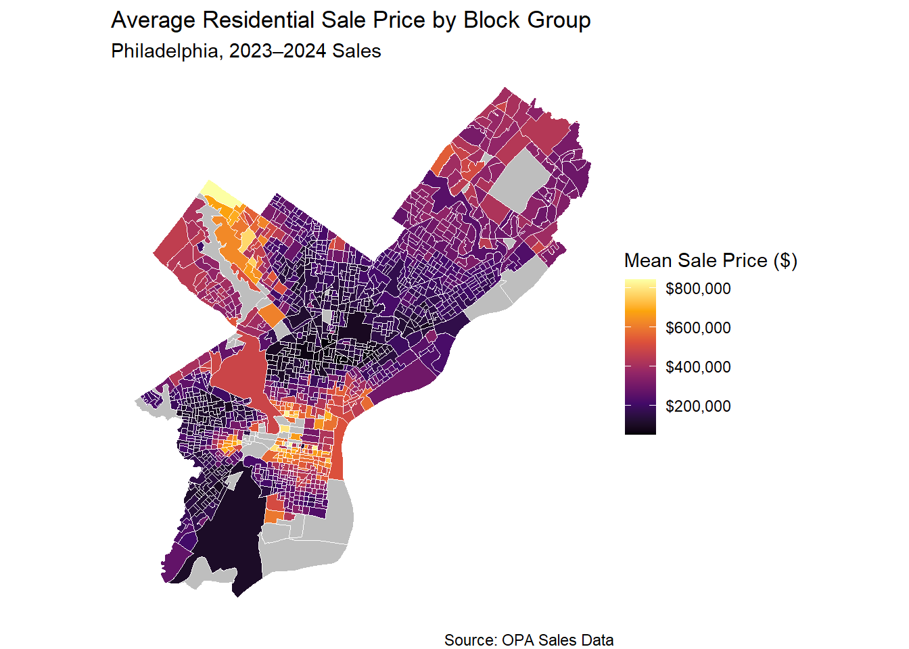
Figure 2. Average Sales Price by Block Group Overlayed with HOLC Grade Redlined Neighbourhoods
#both maps combined with lower transparncy for avg sales/block group
ggplot() +
geom_sf(data = sale_price_byblockgroup_geo, aes(fill = mean_price),
color = "white", size = 0.01, alpha = 0.45) +
geom_sf(data = redlining_phl, aes(color = as.factor(grade)),
fill = NA, size = 0.8) +
scale_fill_viridis_c(
name = "Mean Sale Price ($)",
option = "inferno",
na.value = "grey",
labels = scales::dollar
) +
scale_color_manual(
name = "HOLC Grade",
values = c("0" = "grey", "1" = "green", "2" = "blue", "3" = "yellow", "4" = "red"),
labels = c("1" = "A", "2" = "B", "3" = "C", "4" = "D")
) +
labs(
title = "Average Residential Sale Price by Block Group with Redlining Grades",
subtitle = "Philadelphia, 2023–2024 Sales",
caption = "Source: OPA Sales Data; HOLC Redlining Boundaries"
) +
theme_void()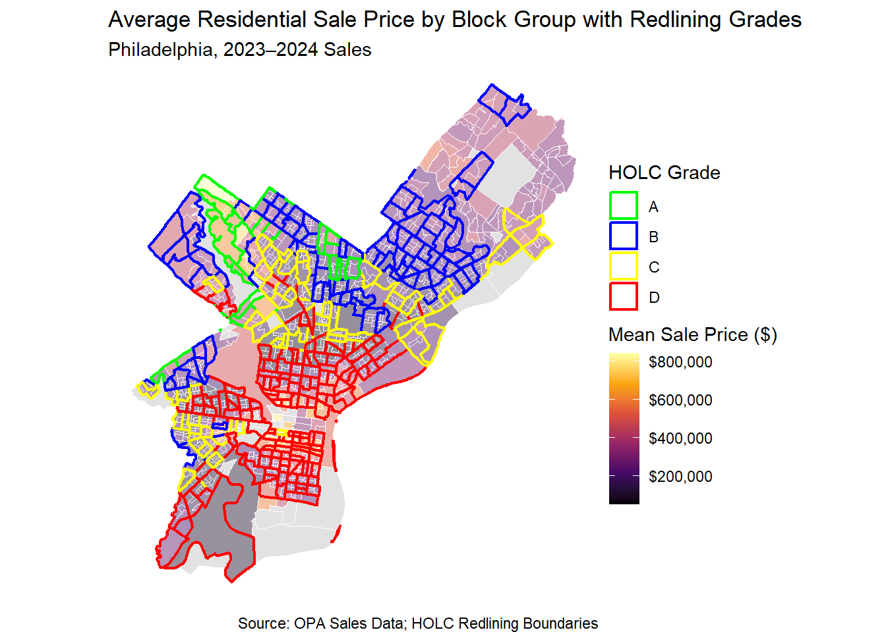
Distribution of Home Sales Prices
Figure 3. below displays the distribution of single-family home sale prices in Philadelphia for 2023 and 2024 (after removing outliers and missing values). Upon further review of the data, it was evident that housing units with 0 bathrooms, homes with more than 10 bedrooms, and total livable area greater than 7500 square feet were outliers and needed to be removed.
The distribution is visibly right-skewed, with the majority of properties selling prices between $100k and $400k, and a peak concentration around $200k to $250k. The right-skewed tail shows that there is a presence of higher-value properties, particularly concentrated in certain neighborhoods, as indicated in Figures 1 & 2. As a result of this skew, a log transformation of sale price was applied prior to modeling to normalize the distribution and meet the assumptions of linear regression.
#To ensure NA values do not impact our graphics, they are removed here and again later.
housing_census_geo_no_na <- housing_census_geo %>%
drop_na(MEDHHINCE, Pov_Prop, BACH_PROP, Vacancy_Rate, WHITE_PROP)
#Upon further review, it was noted that more data cleaning was required. These were used later in EDA.
housing_census_geo_no_na <- housing_census_geo_no_na %>%
filter(number_of_bathrooms > 0 & number_of_bathrooms <= 10,
number_of_bedrooms <= 10,
total_livable_area <= 7500)Figure 3. Histogram of Single Family Home Sale Prices (Pre-Logged)
#Histogram of sale price after removing NA, and outliers. Before LOG transformation
ggplot(housing_census_geo_no_na) + aes(x = sale_price) + geom_histogram(bins = 25, fill = "orange", color = "white", alpha = 0.9) + labs( title = "Distribution of Sale Prices", x = "Sale Price ($)", y = "Number of Properties", caption = "Source: OPA Sales Data" ) + scale_x_continuous(labels = scales::dollar) + theme_minimal()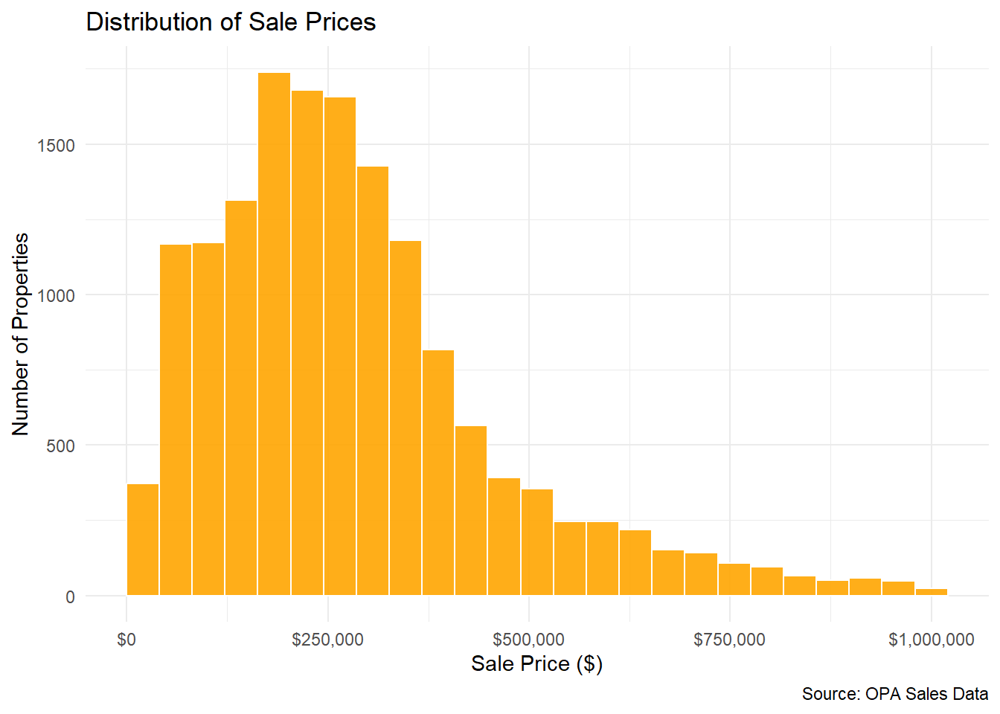
As mentioned above, the original sales data is evidently right-skewed, requiring a log transformation to ensure normally distribution. Figure 4. below is approximately more normally distributed, centered around log sale price of 12.5, which is about $270k (e^12.5). All subsequent modelling and operations were performed using the log-sale price as the outcome variable, unless stated otherwise.
Figure 4. Histogram of Single Family Home Sale Prices (Logged)
#Histogram of sale price after removing NA, and outliers. LOG transformation
ggplot(housing_census_geo_no_na) +
aes(x = log_sale_price) +
geom_histogram(bins = 25, fill = "darkred", color = "white", alpha = 0.9) +
labs( title = "Distribution of Log Sale Prices", x = "Log Sale Price", y = "Number of Properties", caption = "Source: OPA Sales Data" ) +
theme_minimal() 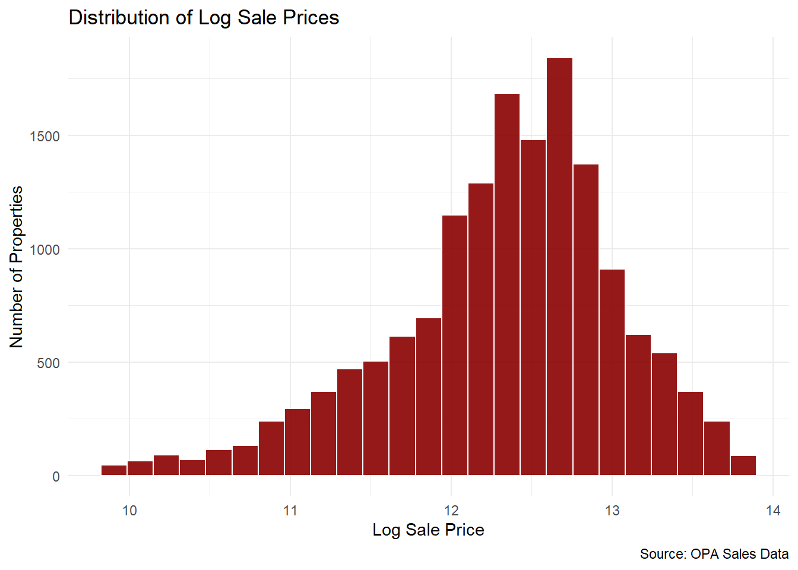
Log Sales Price and Housing Structural Features Correlation
Moving on to correlation between log home sales prices and various structural features, the below scatterplots (from left to right) show their corresponding correlations, with a linear regression line to show the direction and strength of the relationship. First, on the top left, the correlation between number of bedrooms and log sales price appears positive, but not necessarily strong. Similarly, number of bathrooms also has a positive relationship with log home sales prices, but, as indicated by the red line, it has a stronger positive relationship than that of the number of bedrooms. In other words, according to these graphs, the number of bedrooms and bathrooms show a correlation with higher housing prices.
The first graph on the second row of the correlation between liveable area in square feet and log home sales price depicts the strongest positive correlation among the structural variables. This graph shows the the liveable area, especially the larger it is, is likely the strongest determinant in housing sales price, in our model at least.
Finally, educational attainment, presented in the last graph on the left in Figure 5 presents a positive correlation. The graph suggests that higher educational attainment, especially a bachelor’s degree or higher, is correlated with higher log housing sales prices. These results could be reflective of other socioeconomic variables where individuals with higher degrees tend to have higher purchasing power, and thus have a positive correlation with housing prices.
Figure 5. Scatterplots of Log Home Sales Price and Structural features (P)
#scatterplots for correlation between sale price and structural data
#log sale price and number of bedrooms
p1 <- ggplot(data = housing_census_geo_no_na) +
aes(x = number_of_bedrooms, y = log_sale_price) +
geom_point(alpha = 0.3) +
geom_smooth(method = "lm", color = "red", se = FALSE) +
labs(title = " Number of Bedrooms vs Log of Sales Price",
x = "Number of Bedrooms",
y = "Log Sales Price") +
theme_minimal()
#log sale price and number of bathrooms
p2 <- ggplot(data = housing_census_geo_no_na) +
aes(x = number_of_bathrooms, y = log_sale_price) +
geom_point(alpha = 0.3) +
geom_smooth(method = "lm", color = "red", se = FALSE) +
labs(title = "Number of Bathrooms vs Log of Sales Price",
x = "Number of Bathrooms",
y = "Log Sales Price") +
theme_minimal()
#log sale price and total liveable area
p3 <- ggplot(data = housing_census_geo_no_na) +
aes(x = total_livable_area, y = log_sale_price) +
geom_point(alpha = 0.3) +
geom_smooth(method = "lm", color = "red", se = FALSE)+
labs (title = "Total Livable Area vs Log of Sales Price",
x = "Total Livable Area",
y = "Log of Sales Price") +
theme_minimal()
#log sale price and year built
p4 <- ggplot(data = housing_census_geo_no_na) +
aes(x = 2025 - year_built, y = log_sale_price) +
geom_point(alpha = 0.3) +
geom_smooth(method = "lm", color = "red", se = FALSE) +
labs(title = " Age of building vs Log of Sales Price",
x = "Age in Years",
y = "Log of Sales Price") +
theme_minimal()
#log sale price and share of residents with at least a bachelor's degree
p5 <- ggplot(data = housing_census_geo_no_na) +
aes(x = BACH_PROP, y = log_sale_price) +
geom_point(alpha = 0.3) +
geom_smooth(method = "lm", color = "red", se = FALSE) +
labs(title = " Bachelor's Degree vs Log of Sales Price",
x = "Bachelor's Degree Proportion",
y = "Log of Sales Price") +
theme_minimal()
#google and claude (generate the code) and r blogs assisted for beautification and fitting
combined_struc <- (p1 + p2 + p3 + p4 + p5)+
plot_layout(ncol = 2) &
theme(plot.title = element_text(size = 8),
axis.title = element_text(size = 7),
axis.text = element_text(size = 6))
combined_struc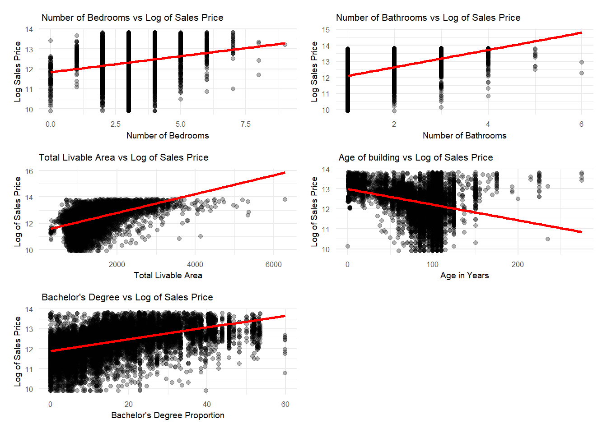
Log Sales Price and Neighborhood Spatial Features Correlation
The below scatterplots in Figure 6. examine the correlation between log sales price and various spatial predictors: proximity to crimes (burglaries and homicide), proximity to commercial corridors, distance to downtown, and proximity to industrial areas.
From left to right, the first scatterplot shows a positive correlation in which the further a property is from burglaries, the higher the home sales price is. This indicates that properties farther away from property crime (burglaries and robberies) are meaningful for home sales prices. However, based on the scatterplot, it also shows a strong cluster from zero to 5000 ft away from burglaries, showing that many homes tend to be in relatively close proximity to property crime. Likewise, distance to homicidal crimes also show a positive correlation where the further a property is, the higher the sales homes price. Despite the clear positive correlation, there is more spread across the city than that of property crime.
The second row of scatterplots for the correlation between commercial corridors and proximity to center city are both weaker compared to the previous relationships. Distance to commercial corridors, for example, shows a very minimal positive regression line between 12 and 13 log sales price as distance increases, showing there’s variation in sales price regardless of distance to commercial corridors. Similarity, distance to downtown (Center City) is reflected as having almost no slope, and yet wide spread from 0 to 80k ft away from Center City. This could be an indication that Philadelphia as a city contains pockets of higher home sales value, shown in Figure #, where distance to downtown is not the only indicator of higher home sales prices. Finally, there is a more evident positive slope for proximity to industrial land where the further a property is from industrial land, there tends to be a higher sales price. That said, this regression line is not as strong as the regression lines for crime.
Figure 6. Scatterplots of Log Home Sales Price and Spatial features
x1 <- ggplot(data = final_model_data) +
aes(x = Dist_BurgRob, y = log_sale_price.x) +
geom_point(alpha = 0.3) +
geom_smooth(method = "lm", color = "red", se = FALSE) +
labs(title = " Distance to Burglaries vs Log of Sales Price",
x = "Distance to Burglaries",
y = "Log Sales Price") +
theme_minimal()
x2 <- ggplot(data = final_model_data) +
aes(x = Dist_Homicide, y = log_sale_price.x) +
geom_point(alpha = 0.3) +
geom_smooth(method = "lm", color = "red", se = FALSE) +
labs(title = " Distance to Homicide vs Log of Sales Price",
x = "Distance to Homicide",
y = "Log Sales Price") +
theme_minimal()
x3 <- ggplot(data = final_model_data) +
aes(x = Dist_Comcor, y = log_sale_price.x) +
geom_point(alpha = 0.3) +
geom_smooth(method = "lm", color = "red", se = FALSE) +
labs(title = " Distance to Commercial Corridor vs Log of Sales Price",
x = "Distance to Commercial Corridor",
y = "Log Sales Price") +
theme_minimal()
x4 <- ggplot(data = final_model_data) +
aes(x = dist_centercity, y = log_sale_price.x) +
geom_point(alpha = 0.3) +
geom_smooth(method = "lm", color = "red", se = FALSE) +
labs(title = " Distance to Center City vs Log of Sales Price",
x = "Distance to Center City",
y = "Log Sales Price") +
theme_minimal()
x5 <- ggplot(data = final_model_data) +
aes(x = industrial_knn31, y = log_sale_price.x) +
geom_point(alpha = 0.3) +
geom_smooth(method = "lm", color = "red", se = FALSE) +
labs(title = " Industrial vs Log of Sales Price",
x = "Distance to Industraial",
y = "Log Sales Price") +
theme_minimal()
write.csv(final_model_data, "data_clean/final_model_data")
combined_struc1 <- (x1 + x2 + x3 + x4 + x5) +
plot_layout(ncol = 2) &
theme(plot.title = element_text(size = 8),
axis.title = element_text(size = 7),
axis.text = element_text(size = 6))
combined_struc1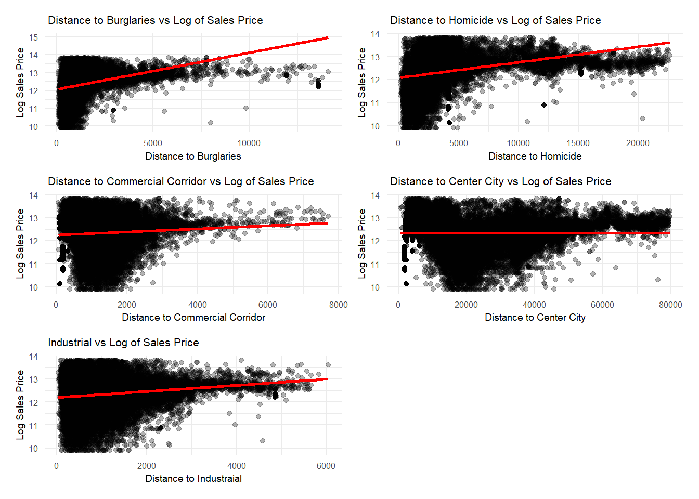
Model Building
To predict residential sale prices in Philadelphia, we built four progressive ordinary least squares (OLS) regression models, each adding a new layer of explanatory variables. All models predict log sale price to address the right skew in the distribution of sale prices and to allow for percentage-based interpretations of coefficients. The final four models are described in more detail below.
Initial Model for Structural Features Only
#adding age column to final model dataframe
final_model_data_with_interaction <- final_model_data_with_interaction %>%
mutate( age = 2024 - year_built.x)
#building a model of only structural features
structural_model <- lm(log_sale_price.x ~ age + number_of_bathrooms.x + number_of_bedrooms.x + total_livable_area.x, data=final_model_data_with_interaction)
#looking at summary of model
summary(structural_model)
#step function automatically drops the weakest variable
step <- step(structural_model)
anova(step)
#building a model of only structural features without weakest variable: number of bedrooms
lm <- lm(log_sale_price.x ~ age + number_of_bathrooms.x + total_livable_area.x, data=final_model_data_with_interaction) #"Structural Model"
summary(lm)
#checking for multi-collinearity, if any value is >10 it will be removed to make the model leaner
vif(lm)Initial Structural Model With Census Variables
#shortening dataframe name for convenience
dat <-final_model_data_with_interaction
#building model with only census variables
cen_model <- lm(log_sale_price.x ~ BACH_PROP + WHITE_PROP + Pov_Prop + Vacancy_Rate + MEDHHINCE, data = dat)
summary(cen_model)
#building model with both census and structural variables
lm2 <- lm(log_sale_price.x ~ age + number_of_bathrooms.x + number_of_bedrooms.x + total_livable_area.x + BACH_PROP + WHITE_PROP + Pov_Prop + Vacancy_Rate + MEDHHINCE, data = dat ) #"Demographic Features Model"
summary(lm2)
#checking for multi-collinearity; if any value is >10 it will be removed to make the model leaner
vif(lm2)Initial Model With Spatial Features
#building model with only spatial variables
spatial_lm <- lm(log_sale_price.x ~ near_transit + Dist_Homicide + Dist_BurgRob + Dist_Comcor + parks_400 + dist_centercity + industrial_knn31 + crime_score, data = dat )
summary(spatial_lm)
spat_step_lm <- step(spatial_lm)
vif(spatial_lm)
#building model with spatial features and structural features and census data variables
lm3 <- lm(log_sale_price.x ~ near_transit + Dist_Homicide + Dist_BurgRob + Dist_Comcor + parks_400 + dist_centercity + industrial_knn31+
crime_score + age+ number_of_bathrooms.x + number_of_bedrooms.x + total_livable_area.x + BACH_PROP + WHITE_PROP + Pov_Prop +
Vacancy_Rate + MEDHHINCE , data = dat ) #"Spatial Features Model"
summary(lm3)
vif(lm3)Initial Model Interaction Terms
#building model with only interaction terms
interaction_lm <- lm(log_sale_price.x ~ vacant_and_BurgRob + distcentercity_transit + education_and_pov , data = dat)
summary(interaction_lm)
vif(interaction_lm)
#building model with: interaction terms, structural features, spatial features and census data variables
lm4 <- lm(log_sale_price.x ~ vacant_and_BurgRob + number_of_bedrooms.x + Dist_BurgRob + crime_score + distcentercity_transit + education_and_pov + near_transit + Dist_Homicide + Dist_Comcor + parks_400 + dist_centercity + industrial_knn31 + age + number_of_bathrooms.x + total_livable_area.x + BACH_PROP + WHITE_PROP + Pov_Prop + Vacancy_Rate + MEDHHINCE + redlining_grade, data = dat)
summary(lm4)
vif(lm4)Initial Model with Fixed Effects
#building a model with only fixed effects: Neighborhood
lm5<- lm(log_sale_price.x ~ as.factor(Name), data = dat)
summary(lm5)
#building model with all variables: fixed effects, interaction terms, structural features, spatial features and census data variables
lm6 <- lm(log_sale_price.x ~ as.factor(Name) + vacant_and_BurgRob + number_of_bedrooms.x + Dist_BurgRob + crime_score + distcentercity_transit + education_and_pov + near_transit + Dist_Homicide + Dist_Comcor + parks_400 + dist_centercity + industrial_knn31 + age + number_of_bathrooms.x + total_livable_area.x + BACH_PROP + WHITE_PROP + Pov_Prop + Vacancy_Rate + MEDHHINCE + redlining_grade, data = dat )
summary(lm6)
vif(lm6)
#dropping all terms w high co-linearity and interactions terms whose base terms are removed as well; that is, anything that has a score >10
#updated lm6 model
lm6 <- lm(log_sale_price.x ~ as.factor(Name) + number_of_bedrooms.x + crime_score + distcentercity_transit + education_and_pov + near_transit + Dist_Homicide + Dist_Comcor + parks_400 + dist_centercity + industrial_knn31 + age + number_of_bathrooms.x + total_livable_area.x + BACH_PROP + WHITE_PROP + Pov_Prop + Vacancy_Rate + MEDHHINCE, data = dat )
summary(lm6)
vif(lm6)
#dropping variables with low statistical significance as well
lm7<- lm(log_sale_price.x ~ as.factor(Name) + crime_score + near_transit + parks_400 + age + number_of_bathrooms.x + total_livable_area.x + BACH_PROP + WHITE_PROP + Pov_Prop + Vacancy_Rate , data = dat )
summary(lm7)Initial Run of Cross-Validation
ctrl <- trainControl(method = "cv", number = 10)
# Model 1: Structural
cv_m1 <- train(log_sale_price.x ~ age + number_of_bathrooms.x + total_livable_area.x, data = final_model_data_with_interaction, method = "lm", trControl = ctrl)
# Model 2: + Demographic
cv_m2 <- train(log_sale_price.x ~ age + number_of_bathrooms.x + number_of_bedrooms.x + total_livable_area.x + BACH_PROP + WHITE_PROP + Pov_Prop + Vacancy_Rate + MEDHHINCE, data = dat
, method = "lm", trControl = ctrl)
# Model 3: + Spatial
cv_m3 <- train(log_sale_price.x ~ near_transit + Dist_Homicide + Dist_BurgRob + Dist_Comcor + parks_400 + dist_centercity + industrial_knn31+ crime_score + age + number_of_bathrooms.x + number_of_bedrooms.x + total_livable_area.x + BACH_PROP + WHITE_PROP + Pov_Prop + Vacancy_Rate + MEDHHINCE , data = dat, method = "lm", trControl = ctrl)
# Model 4: + Fixed Effects
cv_m4 <- train(log_sale_price.x ~ as.factor(Name) + age + I(age^2) + crime_score + near_transit + parks_400 + age + number_of_bathrooms.x + total_livable_area.x + BACH_PROP + WHITE_PROP + Pov_Prop + Vacancy_Rate , data = dat, method = "lm", trControl = ctrl)
# Compare
tibble(
Model = c("Structural", "+ Demographic", "+ Spatial", "+ Fixed Effects"),
RMSE = c(cv_m1$results$RMSE, cv_m2$results$RMSE, cv_m3$results$RMSE, cv_m4$results$RMSE)
)Seeing that the model still has certain issues after running the cross-validation, we decided to handle sparse categories. We also saw if any further feature engineering could be conducted based on the way the predictor variables present themselves.
Checking Variables for Skew
#standard error and R-square are still not very high; checking for skew in predictor variables as well to see if something needs may be log-transformed #doing a quick check with unformatted graphs
g1 <- ggplot(dat, aes(x = total_livable_area.x)) +
geom_histogram(bins = 30) +
theme_minimal()
g2 <- ggplot(dat, aes(x = crime_score)) +
geom_histogram(bins = 30) +
theme_minimal()
g3 <- ggplot(dat, aes(x = age)) +
geom_histogram(bins = 30) +
theme_minimal()
#view all three histogram figures
g1 + g2 + g3 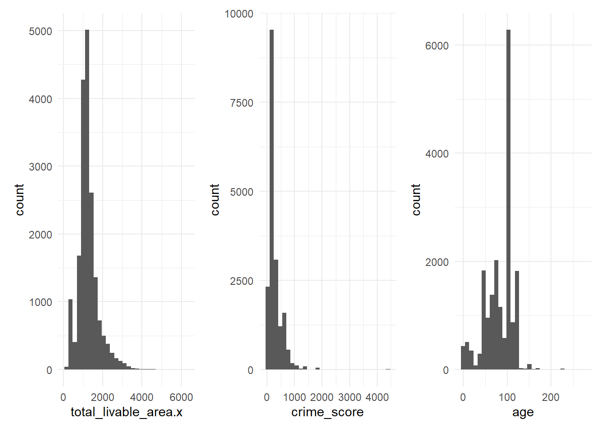
#after seeing a right skew for liveable area and crime_score, we log transform these variables
#age might be best dealt with as a polynomial term as relationship b/w age and home is likely non-linear
dat <- dat %>%
mutate(log_liv_area = log(total_livable_area.x + 1)) %>%
mutate(log_crime_score = log(crime_score + 1))#last model iteration
lm8 <- lm(log_sale_price.x ~ as.factor(Name) + age + I(age^2) + log_crime_score + near_transit + parks_400 + number_of_bathrooms.x + log_liv_area + BACH_PROP + WHITE_PROP + Pov_Prop + Vacancy_Rate , data = dat ) #"Fixed Effects and Interaction Terms"
summary(lm8)Handling Sparse Categories
category_check <- dat%>%
st_drop_geometry() %>%
count(Name) %>%
arrange(n)
print(category_check)
#used claude to debug code here received an error, and it suggested using group_by as a function initially so it firsts counts sales per neighborhood and then uses that count to create a small neighborhoods category
dat <- dat %>%
group_by(Name) %>%
mutate(name_count = n()) %>%
ungroup() %>%
mutate(name_cv = if_else(name_count <= 10, "Small_Neighborhoods", as.character(Name)))
#now running cross-validation again to see the results
cv_model_fe <- train(log_sale_price.x ~ as.factor(name_cv) + poly(age,2) + log_crime_score + near_transit + parks_400 + age+ number_of_bathrooms.x + log_liv_area + BACH_PROP + WHITE_PROP + Pov_Prop + Vacancy_Rate , data = dat,
method = "lm",
trControl = trainControl(method = "cv", number = 10)
)
tibble(
Model = c("Structural", "+Demographic", "+Spatial", "+Fixed Effects"),
RMSE = c(cv_m1$results$RMSE, cv_m2$results$RMSE, cv_m3$results$RMSE, cv_model_fe$results$RMSE)
)Building the Final Model
#Model 1: Structural only
structural <- lm(log_sale_price.x ~ age+ I(age^2) + number_of_bathrooms.x +
log_liv_area,
data = dat)
summary(structural)
#Model 2: + Demographic
demographic <- lm(log_sale_price.x ~ age+ I(age^2) + number_of_bathrooms.x +
log_liv_area + BACH_PROP + WHITE_PROP + Pov_Prop +
Vacancy_Rate,
data = dat)
summary(demographic)
#Model 3: + Spatial
spatial <- lm(log_sale_price.x ~ age+ I(age^2) + number_of_bathrooms.x +
log_liv_area + BACH_PROP + WHITE_PROP + Pov_Prop +
Vacancy_Rate + log_crime_score + near_transit + parks_400,
data = dat)
summary(spatial)
#Model 4: + Fixed Effects (chosen model)
FE <- lm(log_sale_price.x ~ as.factor(name_cv) + age+ I(age^2) +
number_of_bathrooms.x + log_liv_area + BACH_PROP + WHITE_PROP +
Pov_Prop + Vacancy_Rate + log_crime_score + near_transit +
parks_400,
data = dat)
summary(FE)Chosen Model
#modelsummary table for appendix
modelsummary(
list(
"Structural" = structural,
"+ Demographic" = demographic,
"+ Spatial" = spatial,
"+ Fixed Effects" = FE
),
stars = TRUE,
gof_map = c("nobs", "r.squared", "adj.r.squared"),
coef_omit = "as.factor" #took help from claude to hide neighborhood dummies to clean up the final output
)| Structural | + Demographic | + Spatial | + Fixed Effects | |
|---|---|---|---|---|
| + p < 0.1, * p < 0.05, ** p < 0.01, *** p < 0.001 | ||||
| (Intercept) | 9.152*** | 7.596*** | 8.181*** | 7.741*** |
| (0.079) | (0.070) | (0.083) | (0.097) | |
| age | -0.013*** | -0.005*** | -0.006*** | -0.003*** |
| (0.000) | (0.000) | (0.000) | (0.000) | |
| I(age^2) | 0.000*** | 0.000*** | 0.000*** | 0.000*** |
| (0.000) | (0.000) | (0.000) | (0.000) | |
| number_of_bathrooms.x | 0.260*** | 0.226*** | 0.232*** | 0.176*** |
| (0.008) | (0.006) | (0.006) | (0.006) | |
| log_liv_area | 0.497*** | 0.617*** | 0.580*** | 0.656*** |
| (0.011) | (0.009) | (0.010) | (0.011) | |
| BACH_PROP | 0.008*** | 0.008*** | 0.001** | |
| (0.000) | (0.000) | (0.000) | ||
| WHITE_PROP | 0.007*** | 0.007*** | 0.004*** | |
| (0.000) | (0.000) | (0.000) | ||
| Pov_Prop | -0.005*** | -0.004*** | -0.002*** | |
| (0.000) | (0.000) | (0.000) | ||
| Vacancy_Rate | -0.007*** | -0.007*** | -0.003*** | |
| (0.000) | (0.000) | (0.000) | ||
| log_crime_score | -0.064*** | -0.048*** | ||
| (0.005) | (0.006) | |||
| near_transit | -0.026*** | -0.075*** | ||
| (0.008) | (0.010) | |||
| parks_400 | 0.028*** | 0.028*** | ||
| (0.003) | (0.003) | |||
| Num.Obs. | 18768 | 18768 | 18768 | 18768 |
| R2 | 0.381 | 0.619 | 0.624 | 0.705 |
| R2 Adj. | 0.381 | 0.619 | 0.624 | 0.703 |
Model 1: Structural Features Only The baseline model includes only the physical characteristics of each property: livable area (log transformed to address right skew), number of bathrooms, and building age modeled as a polynomial term (age + age²) to capture the nonlinear U-shaped relationship between age and price unique to Philadelphia’s historic housing stock. Newer homes and historic properties command premiums, while mid-century homes represent the trough. This model achieves an RMSE of 0.5703, explaining approximately 38% of variance in sale prices.
Model 2: Adding Demographic Variables The second model adds census block group level demographic variables including the proportion of residents with a bachelor’s degree, proportion white, poverty proportion, and vacancy rate. The addition of these variables produces the largest single improvement in model performance, dropping RMSE to 0.4540 and explaining 62% of the variance. This confirms that neighborhood socioeconomic context is a powerful driver of residential prices in Philadelphia beyond the physical characteristics of individual properties.
Model 3: Adding Spatial Features The third model incorporates engineered spatial features: a composite weighted crime score (violent crimes weighted 4, violent property crimes 3, non-violent property crimes 2, non-violent crimes 1), a binary transit proximity indicator, and a count of parks within 400 feet. Crime score was log transformed given its strong right skew. The marginal improvement in RMSE (0.4540 to 0.4492) suggests spatial features are partially absorbed by the demographic variables, as crime and vacancy are spatially correlated with poverty and racial composition at the block group level.
Model 4: Adding Neighborhood Fixed Effects The final model adds neighborhood fixed effects via dummy variables for each Philadelphia neighborhood, with sparse neighborhoods (fewer than 10 sales) grouped into a single “Small Neighborhoods” category to avoid instability in cross validation folds. This produces the second largest improvement, dropping RMSE to 0.3905 and explaining variance up to 70%. The fixed effects capture unobserved neighborhood level variation, historic character, school quality, local amenities, that cannot be fully captured by individual variables alone.
Cross-Validation Final Run
All four models were evaluated using 10-fold cross validation to assess out-of-sample predictive performance and guard against overfitting. Results are consistent with in-sample performance, confirming the models generalize well to unseen data:
#setting up 10-fold cross validation - splitting data into 10 equal chunks
ctrl <- trainControl(method = "cv", number = 10)
# CV for all 4 models
cv_str <- train(log_sale_price.x ~ age + I(age^2) + number_of_bathrooms.x +
log_liv_area,
data = dat, method = "lm", trControl = ctrl)
cv_demo <- train(log_sale_price.x ~ age + I(age^2) + number_of_bathrooms.x +
log_liv_area + BACH_PROP + WHITE_PROP + Pov_Prop +
Vacancy_Rate,
data = dat, method = "lm", trControl = ctrl)
cv_spat <- train(log_sale_price.x ~ age + I(age^2) + number_of_bathrooms.x +
log_liv_area + BACH_PROP + WHITE_PROP + Pov_Prop +
Vacancy_Rate + log_crime_score + near_transit + parks_400,
data = dat, method = "lm", trControl = ctrl)
cv_fe<- train(log_sale_price.x ~ as.factor(name_cv) + age + I(age^2) +
number_of_bathrooms.x + log_liv_area + BACH_PROP + WHITE_PROP +
Pov_Prop + Vacancy_Rate + log_crime_score + near_transit +
parks_400,
data = dat, method = "lm", trControl = ctrl)Cross Validation Results
#Results table
cv_results <- tibble(
Model = c("Structural", "+ Demographic", "+ Spatial", "+ Fixed Effects"),
RMSE = c(cv_str$results$RMSE, cv_demo$results$RMSE,
cv_spat$results$RMSE, cv_fe$results$RMSE),
MAE = c(cv_str$results$MAE, cv_demo$results$MAE,
cv_spat$results$MAE, cv_fe$results$MAE),
R2 = c(cv_str$results$Rsquared, cv_demo$results$Rsquared,
cv_spat$results$Rsquared, cv_fe$results$Rsquared)
)
cv_results# A tibble: 4 × 4
Model RMSE MAE R2
<chr> <dbl> <dbl> <dbl>
1 Structural 0.561 0.419 0.382
2 + Demographic 0.440 0.318 0.619
3 + Spatial 0.437 0.316 0.624
4 + Fixed Effects 0.391 0.267 0.700The progressive improvement across models validates our layered approach. The addition of each feature group adds meaningful predictive power beyond the previous layer.
Predicted V/S Actual Plot
Figure 8. Predicted vs. Actual Log Sale Price
#plotting the predicted versus actual
dat$predicted <- predict(FE, dat)
ggplot(dat, aes(x = predicted, y = log_sale_price.x)) +
geom_point(alpha = 0.2, color = "steelblue") +
geom_abline(intercept = 0, slope = 1, color = "red", linetype = "dashed") +
labs(
title = "Predicted vs Actual Log Sale Price",
subtitle = "Final Model with Neighborhood Fixed Effects",
x = "Predicted Log Sale Price",
y = "Actual Log Sale Price",
caption = "Red dashed line = perfect prediction"
) +
theme_minimal() 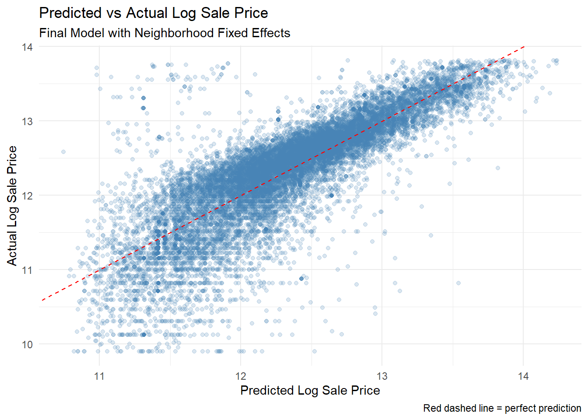
The predicted vs actual scatter plot for the final model shows strong alignment along the perfect prediction line across the full price range, with no systematic over or underprediction at either extreme. Some spread is visible at lower price points (log price 10–11), suggesting the model is less precise for lower value properties, an important equity consideration for property tax assessment applications.
Predicted Dollars
dat <- dat %>%
mutate(
predicted_price = exp(predicted),
actual_price = exp(log_sale_price.x),
error_dollars = abs(actual_price - predicted_price)
)
mean(dat$error_dollars, na.rm = TRUE)
median(dat$error_dollars, na.rm = TRUE)Converting predictions back from log scale to dollars provides a more intuitive assessment of model accuracy. The median absolute error is $42,994 against a median sale price of $250,000. Mean absolute error of $60,818 is pulled upward by a small number of properties the model predicts poorly. This places our model in the acceptable range for an automated valuation model, while highlighting clear opportunities for improvement.
Identifying Top Predictors for the Neighborhood
summary(FE)$coefficients %>%
as.data.frame() %>%
rownames_to_column("Predictor") %>%
filter(!str_detect(Predictor, "as.factor|age|Intercept")) %>%
arrange(desc(abs(`t value`))) %>%
slice(1:5)
#the top 5 predictors for sale price of homes are:
# 1. log-transformed living area
# 2. number of bathrooms
# 3. share of white residents,
# 4. near parks
# 5. log-transformed crime scoreBeyond neighborhood fixed effects, which represent the single largest driver of price variation, the five strongest non-neighborhood predictors are:
- Livable area: A 10% larger home sells for approximately 6.3% more
- Number of bathrooms: Each additional bathroom adds approximately 19% to sale price
- Proportion white residents : A block group 10 percentage points whiter is associated with homes selling for 4.1% more, reflecting Philadelphia’s persistent residential segregation
- Parks within 400m: Neighborhoods with double the park access see prices approximately 2.8% higher
- Log crime score: A 10% higher crime score is associated with 0.47% lower sale prices
Model Diagnostics
Residual Plot
Figure 9. Residual Plot of Chosen Model
dat$residuals <- residuals(FE)
dat$fitted <- fitted(FE)
ggplot(dat, aes(x = fitted, y = residuals)) +
geom_point(alpha = 0.2) +
geom_hline(yintercept = 0, color = "red", linetype = "dashed") +
labs(title = "Residual Plot", x = "Fitted Values", y = "Residuals") +
theme_minimal()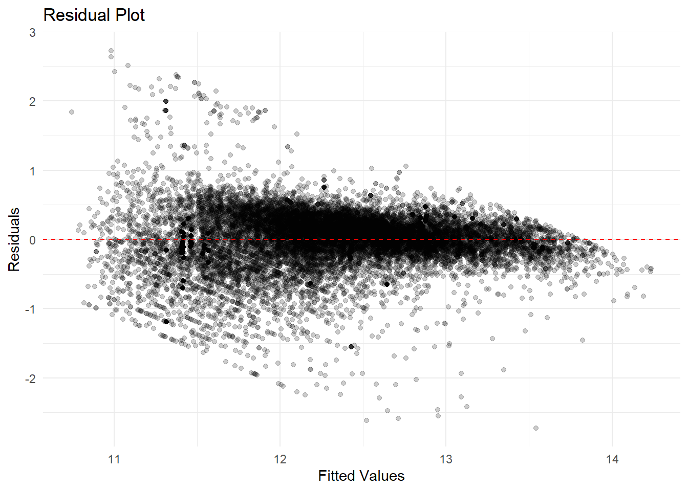
Assumption #1: Linearity & Constant Variance
While the above residual plot shows that residuals appear to be fairly randomly scattered around the horizontal line of zero, we also note that this scatter around zero narrows as the fitted values increase. This means that the model may be less reliable when predicting lower value homes, but increases in reliability for higher value homes. This is the opposite of the “funnel pattern” which typically indicates a violation of homoscedasticity. As such, there is reason to consider the model is missing certain key predictor variables. The lack of any curved pattern of the residuals, however, helps the model to meet the diagnostic test of linearity.
Figure 10. Q-Q Plot
q <- ggplot(dat, aes(sample = residuals)) +
stat_qq() +
stat_qq_line(color = "red") +
labs(title = "Q-Q Plot of Residuals",
x = "Theoretical Quantiles",
y = "Sample Quantiles") +
theme_minimal()
print(q)
Assumption #2: Normality of Residuals
This Q-Q Plot of the sample quantiles plotted against the model’s theoretical quantiles has heavy tails, creating an S-shape curve. This shape typically indicates that the residuals have more extreme values than what would be expected if they were normally distributed - an assumption of linear regression models. This tells us that our data may have significant outlier values that may be contributing to misleading results from the model. We might consider further investigation and removal of outlier values to improve the model.
Figure 10. Cook’s Distance Plot
# Add diagnostic measures
dat <- dat %>%
mutate(
cooks_d = cooks.distance(FE),
leverage = hatvalues(FE),
is_influential = cooks_d > 4/nrow(dat)
)
# Plot Cook's distance
ggplot(dat, aes(x = 1:nrow(dat), y = cooks_d)) +
geom_point(aes(color = is_influential), size = 2) +
geom_hline(yintercept = 4/nrow(dat),
linetype = "dashed", color = "red") +
scale_color_manual(values = c("grey60", "magenta")) +
labs(title = "Cook's Distance",
x = "Observation", y = "Cook's D") +
theme_minimal() +
theme(legend.position = "none")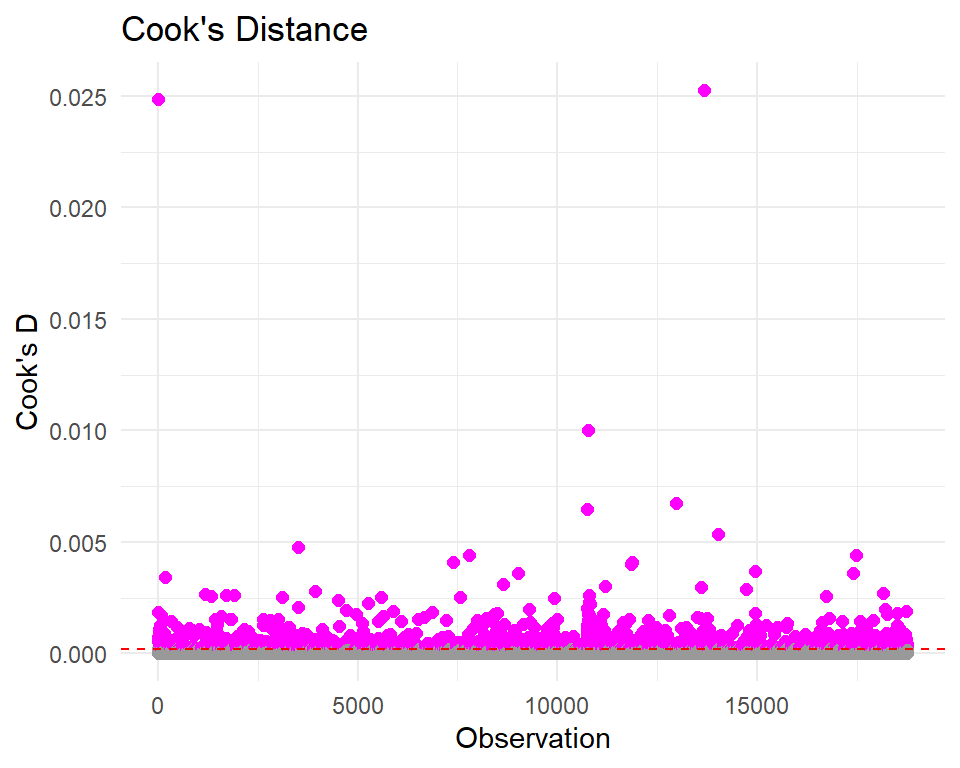
Assumption #3: No Influential Outliers
The Cook’s Distance plot reveals that our data has a potentially significant presence of influential outliers that may be pulling our regression line in a biased direction, and therefore generating misleading predictions. The dashed red line represents the value of 4/n - any point that lies above this threshold may be an influential outlier.
#identifying which observations are influential outliers
influential_obs <- dat %>%
filter(cooks_d > 4/nrow(dat)) %>%
select(cooks_d, log_sale_price.x, predicted, sale_price.x, name_cv,
total_livable_area.x, age, number_of_bathrooms.x) %>%
slice(1:10)
print(influential_obs)# A tibble: 10 × 8
cooks_d log_sale_price.x predicted sale_price.x name_cv total_livable_area.x
<dbl> <dbl> <dbl> <int> <chr> <int>
1 0.000531 12.1 11.2 180000 Mill C… 1180
2 0.0248 10.5 12.6 36000 German… 2346
3 0.00187 10.3 12.2 30000 German… 1844
4 0.000651 9.90 11.8 20000 Olney 1092
5 0.000549 10.0 11.5 23000 Frankf… 1324
6 0.000549 11.4 12.3 90000 Greenw… 900
7 0.000749 9.90 11.4 20000 Felton… 976
8 0.000285 10.6 11.8 40000 Olney 1278
9 0.000239 10.6 11.1 40000 Frankl… 1120
10 0.000267 10.6 11.7 41000 Frankf… 1344
# ℹ 2 more variables: age <dbl>, number_of_bathrooms.x <int>Conclusions & Recommendations
After constructing four separate models - one consisting of only structural property features (‘Structural’), the second including demographic information (‘Demographic’), the third with additional spatial features (‘Spatial’) and the final one with fixed effects and interaction features (‘Fixed Effects’) - we selected the ‘Fixed Effects’ model as our chosen predictive model for housing sale prices. This decision was made based on the model’s respective values for evaluative measures such as R-squared, adjusted R-squared, MAE and RMSE. The initial R-squared value tells us that our chosen model explains nearly 70.0% of the variance of the dependent variable, logged sale price. When we look at the adjusted R-squared, the statistic only slightly declines by 0.2 percentage points, which provides greater confidence that it is not merely the amount of predictors in our model that are contributing to the model’s accuracy level. After conducting cross-validation, we further learned that the model’s Root Mean Squared Error (RMSE) is around 39% and it’s Mean Absolute Error (MAE) is lower at 27%. Both measures give us a greater sense of the typical magnitude of error of the model’s predicted values. In dollar terms, the model’s predicted values have a median error of about $42,994. In this case, the RMSE is greater than the MAE as it is more sensitive to outliers, which indicates that the model may benefit from further investigation into the data points that constitute these outliers and whether there may be adequate reason to remove them from our dataset.
#mapping neighborhoods by residual errors
#calculating residuals
dat <- dat %>%
mutate(residual = log_sale_price.x - predicted)
#aggregating to neighborhood level
residuals_by_hood <- dat %>%
group_by(name_cv) %>%
summarise(mean_residual = mean(residual, na.rm = TRUE),
n = n()) %>%
ungroup()
#joining back to neighborhood shapefile
n_hoods_residuals <- n_hoods %>%
left_join(residuals_by_hood, by = c("Name" = "name_cv"))
#mapping it
ggplot() +
geom_sf(data = n_hoods_residuals,
aes(fill = mean_residual),
color = "white", size = 0.1) +
scale_fill_gradient2(
low = "lightgreen",
mid = "orange",
high = "tomato",
midpoint = 0,
name = "Mean Residual"
) +
labs(
title = "Where Does Our Model Struggle?",
subtitle = "Mean Prediction Residual by Neighborhood",
caption = "Red = model underestimates price | Green = model overestimates price"
) +
theme_void()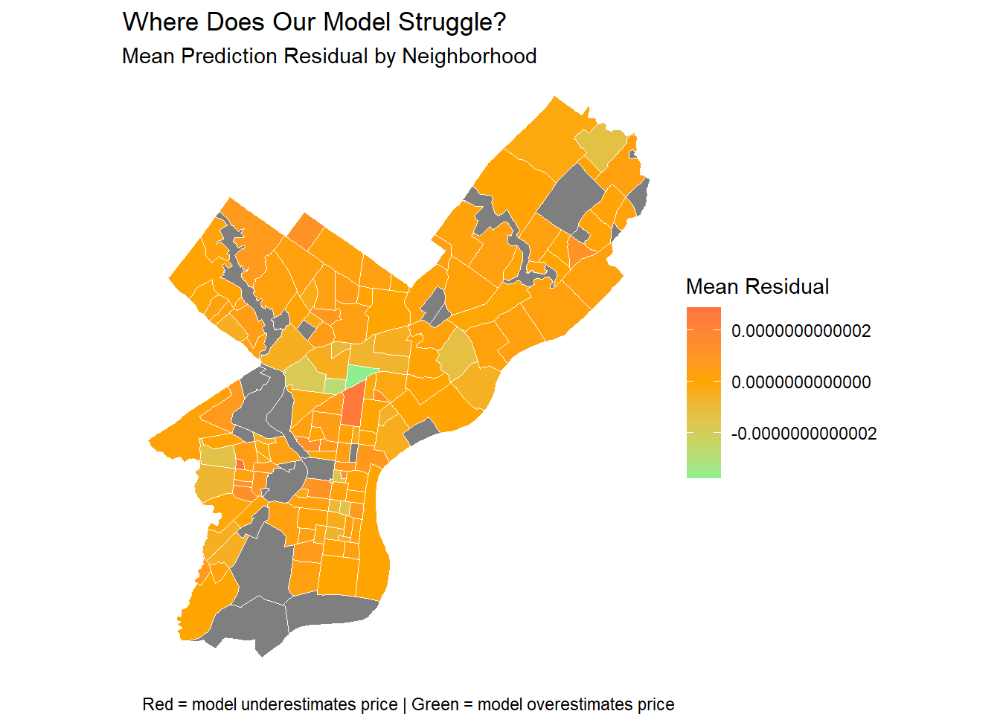
As the model stands, the top five predictors for Philadelphia housing sale prices stood out as the log-transformed living area, number of bathrooms, share of white residents, nearness to parks, and the log-transformed crime score. Finally, the neighborhoods that proved most difficult to predict accurate sale prices within are those that are shaded red and green on the above map titled “Where Does Our Model Struggle?”. One neighborhood where prices are systematically underestimated is Center City East, while the neighborhood where prices are overestimated is Fairhill. The observation of these under and over-estimations suggests that there may be particular factors that define home values in these locations that we have not specified or were not able to capture in our model, like gentrification trends or historical designations.
Ultimately, this model contains several limitations and it is important to note that it must be employed alongside considerations for its implications for promoting equity in Philadelphia. As noted above, while the model is moderately accurate, this accuracy suffers from the presence of influential outliers and may also be systematically missing key predictor features due to its performance on the diagnostic plots above. Indeed, the choropleth map of the model’s mean residuals by Philadelphia neighborhood reveals how sale prices in certain areas of the city may be under or over-predicted. We must be aware that over-prediction in an area that has historically faced under-investment and where community members may be vulnerable in any capacity could be put at a further disadvantage if over-predicted sales prices leads to higher property taxes and in turn, and increased cost of living. Another potential ethical concern is that the proportion of white residents turned out to be among the significant predictors of the model, reflecting the persistence of racially segregated communities in the city. Being a significant predictor, the model is at risk of perpetuating existing inequities by, in one instance, over-valuing homes in areas with a high white resident population while under-valuing homes in areas with a higher non-white population. In sum, the diagnostic tests of our model demonstrate the model’s flaws, and the residual map shows us where these flaws are most prevalent. Moving forward, these limitations must be kept in mind when applying the model for predictive purposes.
write.csv(dat, "data_clean/dat.csv" )